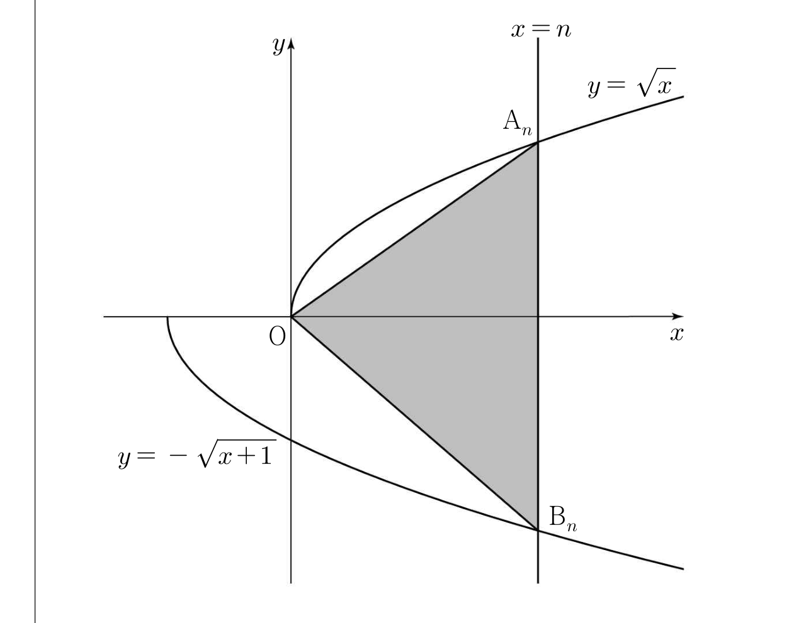
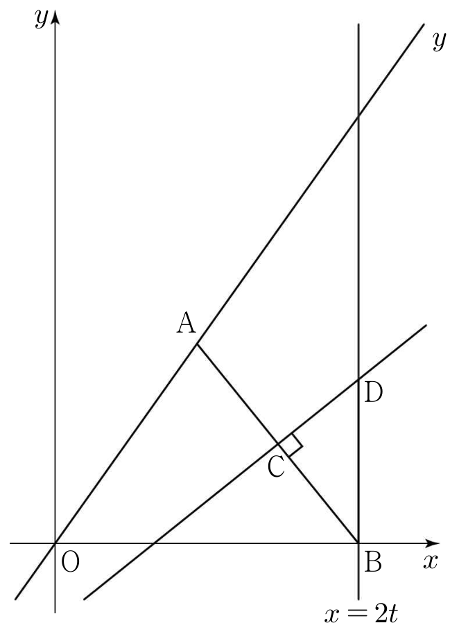

6. 2018년 9월 나형 6번 · 3점 · 고1 범위 · 여러 가지 방정식과 부등식 · G2H-02#9
원본 (내부용)양수 $x$에 대하여 $x+ \frac{9}{x}$의 최솟값은? [$3$점]
① $6$② $7$③ $8$④ $9$⑤ $10$
원본 정답 ①
원본 풀이 (내부용)[출제의도] 절대부등식 이해하기
\(
x>0,\quad \frac9x>0
\)
이므로
\(
x+\frac9x\ge 2\sqrt{x\times\frac9x}=6
\)
(단, 등호는 \(x=3\)일 때 성립한다.)
따라서 \(x+\dfrac9x\)의 최솟값은 6
생성기 숫자판 1/6 · G2H-02#9양수 $x$에 대하여 $x+\frac{25}{x}$의 최솟값으로 옳은 것을 고르세요.
① $6$② $7$③ $8$④ $9$⑤ $10$
정답⑤ $10$ $x>0$이므로 산술평균과 기하평균의 관계에 의하여 $x+\frac{25}{x}\ge 2\sqrt{x\times \frac{25}{x}}=10$ (단, 등호는 $x=\frac{25}{x}$일 때 성립) 따라서 최솟값은 $10$
숫자: 원본 9 3 → 쌍둥이 25
생성기 숫자판 2/6 · G2H-02#9양수 $x$에 대하여 $2x+\frac{2}{x}$의 최솟값으로 옳은 것을 고르세요.
① $2$② $3$③ $4$④ $5$⑤ $6$
정답③ $4$ $x>0$이므로 산술평균과 기하평균의 관계에 의하여 $2x+\frac{2}{x}\ge 2\sqrt{2x\times \frac{2}{x}}=4$ (단, 등호는 $2x=\frac{2}{x}$일 때 성립) 따라서 최솟값은 $4$
숫자: 원본 9 3 → 쌍둥이 2 2
생성기 숫자판 3/6 · G2H-02#9양수 $x$에 대하여 $x+\frac{16}{x}$의 최솟값으로 옳은 것을 고르세요.
① $6$② $7$③ $8$④ $9$⑤ $10$
정답③ $8$ $x>0$이므로 산술평균과 기하평균의 관계에 의하여 $x+\frac{16}{x}\ge 2\sqrt{x\times \frac{16}{x}}=8$ (단, 등호는 $x=\frac{16}{x}$일 때 성립) 따라서 최솟값은 $8$
숫자: 원본 9 3 → 쌍둥이 16
생성기 숫자판 4/6 · G2H-02#9양수 $x$에 대하여 $2x+\frac{8}{x}$의 최솟값으로 옳은 것을 고르세요.
① $5$② $6$③ $7$④ $8$⑤ $9$
정답④ $8$ $x>0$이므로 산술평균과 기하평균의 관계에 의하여 $2x+\frac{8}{x}\ge 2\sqrt{2x\times \frac{8}{x}}=8$ (단, 등호는 $2x=\frac{8}{x}$일 때 성립) 따라서 최솟값은 $8$
숫자: 원본 9 3 → 쌍둥이 2 8
생성기 숫자판 5/6 · G2H-02#9양수 $x$에 대하여 $x+\frac{4}{x}$의 최솟값으로 옳은 것을 고르세요.
① $2$② $3$③ $4$④ $5$⑤ $6$
정답③ $4$ $x>0$이므로 산술평균과 기하평균의 관계에 의하여 $x+\frac{4}{x}\ge 2\sqrt{x\times \frac{4}{x}}=4$ (단, 등호는 $x=\frac{4}{x}$일 때 성립) 따라서 최솟값은 $4$
숫자: 원본 9 3 → 쌍둥이 4
생성기 숫자판 6/6 · G2H-02#9양수 $x$에 대하여 $x+\frac{9}{x}$의 최솟값으로 옳은 것을 고르세요.
① $2$② $3$③ $4$④ $5$⑤ $6$
정답⑤ $6$ $x>0$이므로 산술평균과 기하평균의 관계에 의하여 $x+\frac{9}{x}\ge 2\sqrt{x\times \frac{9}{x}}=6$ (단, 등호는 $x=\frac{9}{x}$일 때 성립) 따라서 최솟값은 $6$
숫자: 원본 9 3 → 쌍둥이 9 · 같은 수: 9
7. 2018년 9월 나형 7번 · 3점 · 고1 범위 · 명제 · G2H-03b#2
원본 (내부용)실수 $x$에 대한 두 조건 에 대하여 가 이기 위한 충분조건이 되도록 하는 정수 의 최댓값은? $점$ $p: ( x+2 ) ( x-1 ) <0$, $q:x \ge \alpha$
① $-2$② $-1$③ $0$④ $1$⑤ $2$
원본 정답 ①
원본 풀이 (내부용)[출제의도] 충분조건을 이용하여 수학 내적 문제 해결하기
두 조건 \(p,\ q\)의 진리집합을 각각 \(P,\ Q\)라 하면
\(
P=\{x\mid(x+2)(x-1)<0\},\quad Q=\{x\mid x\ge\alpha\}
\)
\(p\)가 \(q\)이기 위한 충분조건이므로 \(P\subset Q\).
도식: 수직선에서 \(P\)는 \(-2\)와 \(1\) 사이의 구간이고, \(Q\)는 \(\alpha\)에서 오른쪽으로 뻗는 구간이다. 따라서 \(\alpha\le -2\)이고 정수 \(\alpha\)의 최댓값은 \(-2\).
생성기 숫자판 1/6 · G2H-03b#2실수 $x$에 대한 두 조건 $p$: $\left(x+4\right)\left(x+1\right)<0$, $q$: $x\ge a$에 대하여 $p$가 $q$이기 위한 충분조건이 되도록 하는 정수 $a$의 최댓값으로 옳은 것을 고르세요.
① $-7$② $-6$③ $-5$④ $-4$⑤ $-3$
정답④ $-4$ $p$: $-4<x<-1$ $p$가 $q$이기 위한 충분조건이려면 $\left\{x\mid -4<x<-1\right\}\subset\left\{x\mid x\ge a\right\}$ $a\le -4$이므로 정수 $a$의 최댓값은 $-4$
숫자: 원본 2 1 0 → 쌍둥이 4 1 0 · 같은 수: 0 1
생성기 숫자판 2/6 · G2H-03b#2실수 $x$에 대한 두 조건 $p$: $\left(x-3\right)\left(x-8\right)<0$, $q$: $x\ge a$에 대하여 $p$가 $q$이기 위한 충분조건이 되도록 하는 정수 $a$의 최댓값으로 옳은 것을 고르세요.
① $0$② $1$③ $2$④ $3$⑤ $4$
정답④ $3$ $p$: $3<x<8$ $p$가 $q$이기 위한 충분조건이려면 $\left\{x\mid 3<x<8\right\}\subset\left\{x\mid x\ge a\right\}$ $a\le 3$이므로 정수 $a$의 최댓값은 $3$
숫자: 원본 2 1 0 → 쌍둥이 3 8 0 · 같은 수: 0
생성기 숫자판 3/6 · G2H-03b#2실수 $x$에 대한 두 조건 $p$: $\left(x-1\right)\left(x-4\right)<0$, $q$: $x\ge a$에 대하여 $p$가 $q$이기 위한 충분조건이 되도록 하는 정수 $a$의 최댓값으로 옳은 것을 고르세요.
① $-1$② $0$③ $1$④ $2$⑤ $3$
정답③ $1$ $p$: $1<x<4$ $p$가 $q$이기 위한 충분조건이려면 $\left\{x\mid 1<x<4\right\}\subset\left\{x\mid x\ge a\right\}$ $a\le 1$이므로 정수 $a$의 최댓값은 $1$
숫자: 원본 2 1 0 → 쌍둥이 1 4 0 · 같은 수: 0 1
생성기 숫자판 4/6 · G2H-03b#2실수 $x$에 대한 두 조건 $p$: $\left(x-3\right)\left(x-5\right)<0$, $q$: $x\ge a$에 대하여 $p$가 $q$이기 위한 충분조건이 되도록 하는 정수 $a$의 최댓값으로 옳은 것을 고르세요.
① $3$② $4$③ $5$④ $6$⑤ $7$
정답① $3$ $p$: $3<x<5$ $p$가 $q$이기 위한 충분조건이려면 $\left\{x\mid 3<x<5\right\}\subset\left\{x\mid x\ge a\right\}$ $a\le 3$이므로 정수 $a$의 최댓값은 $3$
숫자: 원본 2 1 0 → 쌍둥이 3 5 0 · 같은 수: 0
생성기 숫자판 5/6 · G2H-03b#2실수 $x$에 대한 두 조건 $p$: $\left(x-3\right)\left(x-6\right)<0$, $q$: $x\ge a$에 대하여 $p$가 $q$이기 위한 충분조건이 되도록 하는 정수 $a$의 최댓값으로 옳은 것을 고르세요.
① $2$② $3$③ $4$④ $5$⑤ $6$
정답② $3$ $p$: $3<x<6$ $p$가 $q$이기 위한 충분조건이려면 $\left\{x\mid 3<x<6\right\}\subset\left\{x\mid x\ge a\right\}$ $a\le 3$이므로 정수 $a$의 최댓값은 $3$
숫자: 원본 2 1 0 → 쌍둥이 3 6 0 · 같은 수: 0
생성기 숫자판 6/6 · G2H-03b#2실수 $x$에 대한 두 조건 $p$: $\left(x+4\right)\left(x-1\right)<0$, $q$: $x\ge a$에 대하여 $p$가 $q$이기 위한 충분조건이 되도록 하는 정수 $a$의 최댓값으로 옳은 것을 고르세요.
① $-4$② $-3$③ $-2$④ $-1$⑤ $0$
정답① $-4$ $p$: $-4<x<1$ $p$가 $q$이기 위한 충분조건이려면 $\left\{x\mid -4<x<1\right\}\subset\left\{x\mid x\ge a\right\}$ $a\le -4$이므로 정수 $a$의 최댓값은 $-4$
10. 2018년 9월 나형 10번 · 3점 · 수학Ⅱ 함수의 극한·연속 · G2M6-01#1
원본 (내부용)함수 $f ( x ) =$ $\begin{cases} & \begin{aligned} \\ \end{aligned} \\ \begin{aligned} \\ \end{aligned} & \end{cases}$ $2x^{2} +ax+1$ $( x<1 )$ $7$ $( x=1 )$ $-3x+b$ $( x>1 )$ 이 실수 전체의 집합에서 연속일 때, $a+b$의 값은? $($단, $a$와 $b$는 상수이다.$)$ [$3$점]
① $11$② $12$③ $13$④ $14$⑤ $15$
원본 정답 ④
원본 풀이 (내부용)[출제의도] 연속함수의 정의 이해하기
함수 \(f(x)\)가 실수 전체의 집합에서 연속이면 함수 \(f(x)\)는 \(x=1\)에서 연속이다.
\(
\lim_{x\to1^-}f(x)=\lim_{x\to1^+}f(x)=f(1)
\)
\(
\lim_{x\to1^-}f(x)=\lim_{x\to1^-}(2x^2+ax+1)=a+3,
\)
\(
\lim_{x\to1^+}f(x)=\lim_{x\to1^+}(-3x+b)=-3+b,
\)
\(f(1)=7\)이므로 \(a+3=-3+b=7\)
\(
a=4,\quad b=10
\)
따라서 \(a+b=4+10=14\)
생성기 숫자판 1/6 · G2M6-01#1함수 $f\left(x\right)=\begin{cases}x^{2}+ax+3 & \left(x<-1\right)\\7 & \left(x=-1\right)\\-3x+b & \left(x>-1\right)\end{cases}$이 실수 전체의 집합에서 연속일 때, $a+b$의 값으로 옳은 것을 고르세요. (단, $a$, $b$는 상수입니다.)
12. 2018년 9월 나형 12번 · 3점 · 고1 범위 · 유리함수와 무리함수 · G2H-04b#4
원본 (내부용)함수 $y= \frac{ax+1}{bx+1}$의 그래프가 점 $( 2,3 )$을 지나고 직선 $y=2$를 한 점근선으로 가질 때, $a^{2} +b^{2}$의 값은? $($단, $a$와 $b$는 $0$이 아닌 상수이다.$)$ [$3$점]
① $2$② $5$③ $8$④ $11$⑤ $14$
원본 정답 ②
원본 풀이 (내부용)[출제의도] 유리함수의 성질 이해하기
함수
\(
y=\frac{ax+1}{bx+1}
\)
의 그래프가 점 \((2,3)\)을 지나므로
\(
\frac{2a+1}{2b+1}=3\quad\cdots\text{㉠}
\)
함수
\(
y=\frac{ax+1}{bx+1}
\)
의 그래프의 한 점근선이 직선 \(y=2\)이므로
\(
y=\frac{ax+1}{bx+1}
=\frac{a\left(x+\frac1b\right)-\frac ab+1}{b\left(x+\frac1b\right)}
=\frac{-\frac ab+1}{b\left(x+\frac1b\right)}+\frac ab
\)
에서
\(
\frac ab=2\quad\cdots\text{㉡}
\)
㉠, ㉡에 의하여 \(a=3b+1,\ a=2b\)
따라서 \(a=-2,\ b=-1\)이므로 \(a^2+b^2=5\)
생성기 숫자판 1/5 · G2H-04b#4함수 $y=\frac{ax+1}{bx+1}$의 그래프가 점 $\left(1,\ 3\right)$을 지나고 직선 $y=2$를 한 점근선으로 가질 때, $a^{2}+b^{2}$의 값으로 옳은 것을 고르세요. (단, $a$와 $b$는 $0$이 아닌 상수입니다.)
생성기 숫자판 2/5 · G2H-04b#4함수 $y=\frac{ax+1}{bx+1}$의 그래프가 점 $\left(1,\ 4\right)$를 지나고 직선 $y=3$을 한 점근선으로 가질 때, $a^{2}+b^{2}$의 값으로 옳은 것을 고르세요. (단, $a$와 $b$는 $0$이 아닌 상수입니다.)
생성기 숫자판 3/5 · G2H-04b#4함수 $y=\frac{ax+1}{bx+1}$의 그래프가 점 $\left(3,\ 4\right)$를 지나고 직선 $y=5$를 한 점근선으로 가질 때, $a^{2}+b^{2}$의 값으로 옳은 것을 고르세요. (단, $a$와 $b$는 $0$이 아닌 상수입니다.)
생성기 숫자판 4/5 · G2H-04b#4함수 $y=\frac{ax+1}{bx+1}$의 그래프가 점 $\left(1,\ 5\right)$를 지나고 직선 $y=4$를 한 점근선으로 가질 때, $a^{2}+b^{2}$의 값으로 옳은 것을 고르세요. (단, $a$와 $b$는 $0$이 아닌 상수입니다.)
생성기 숫자판 5/5 · G2H-04b#4함수 $y=\frac{ax+1}{bx+1}$의 그래프가 점 $\left(1,\ 5\right)$를 지나고 직선 $y=3$을 한 점근선으로 가질 때, $a^{2}+b^{2}$의 값으로 옳은 것을 고르세요. (단, $a$와 $b$는 $0$이 아닌 상수입니다.)
원본 (내부용)$x$에 대한 다항식 $x^{3} -ax+b$를 $x-1$로 나눈 나머지가 $57$ 이다. 세 수 $1$, $a$, $b$가 이 순서대로 공비가 양수인 등비수열을 이룰 때, $\frac{b}{a}$의 값은? $($단, $a$와 $b$는 상수이다.$)$ [$4$점]
① $2$② $4$③ $8$④ $16$⑤ $32$
원본 정답 ③
원본 풀이 (내부용)[출제의도] 등비수열의 성질을 이용하여 수학 내적 문제 해결하기
\(x\)에 대한 다항식 \(x^3-ax+b\)를 \(x-1\)로 나눈 나머지가 57이므로 나머지 정리에 의하여
\(
1-a+b=57
\)
\(
b=a+56\quad\cdots\text{㉠}
\)
\(1,\ a,\ b\)가 이 순서대로 등비수열을 이루므로
\(
a^2=b\quad\cdots\text{㉡}
\)
㉠, ㉡에 의하여
\(
a^2=a+56
\)
\(
a^2-a-56=(a+7)(a-8)=0
\)
\(
a=-7\text{ 또는 }8
\)
공비는 \(a\)이고 양수이므로 \(a=8,\ b=a^2=64\)
따라서
\(
\frac ba=\frac{64}{8}=8
\)
쌍둥이 1/5 · 4점 쌍둥이$x$에 대한 다항식 $x^3-ax+b$를 $x-1$로 나눈 나머지가 73입니다. 세 수 $1$, $a$, $b$가 이 순서대로 공비가 양수인 등비수열을 이룰 때, $a+b$의 값을 구하세요. (단, $a$와 $b$는 상수입니다.)
① $82$② $86$③ $90$④ $94$⑤ $98$
정답③ $90$ 나머지정리에 따라 $1-a+b=73$입니다. 등비수열의 공비를 $t$라 하면 $a=t$, $b=t^2$이므로 $t^2-t+1=73$입니다. $t^2-t-72=0$을 풀면 양수인 공비는 $t=9$입니다. 따라서 $a+b=t+t^2=9+81=90$입니다.
숫자: 원본 1 57 1 4 → 쌍둥이 1 73 1 · 같은 수: 1
쌍둥이 2/5 · 4점 쌍둥이$x$에 대한 다항식 $x^{3}-ax+b$를 $x-1$로 나눈 나머지가 $43$입니다. 세 수 $1$, $a$, $b$가 이 순서대로 공비가 양수인 등비수열을 이룰 때, $\frac{b}{a}$의 값으로 옳은 것을 고르세요. (단, $a$와 $b$는 상수입니다.)
① $3$② $5$③ $7$④ $9$⑤ $11$
정답③ $7$ 나머지정리에 의하여 $1-a+b=43$ 공비를 $r\left(r>0\right)$라 하면 $a=r$, $b=r^{2}$이므로 $1-r+r^{2}=43$ $r^{2}-r-42=0$, $\left(r-7\right)\left(r+6\right)=0$에서 $r=7$ $a=7$, $b=49$이므로 $\frac{b}{a}=\frac{49}{7}$ $=7$
숫자: 원본 1 57 1 4 → 쌍둥이 1 43 1 · 같은 수: 1
쌍둥이 3/5 · 4점 쌍둥이$x$에 대한 다항식 $x^{3}-ax+b$를 $x-1$로 나눈 나머지가 $31$입니다. 세 수 $1$, $a$, $b$가 이 순서대로 공비가 양수인 등비수열을 이룰 때, $\frac{b}{a}$의 값으로 옳은 것을 고르세요. (단, $a$와 $b$는 상수입니다.)
① $2$② $4$③ $6$④ $8$⑤ $10$
정답③ $6$ 나머지정리에 의하여 $1-a+b=31$ 공비를 $r\left(r>0\right)$라 하면 $a=r$, $b=r^{2}$이므로 $1-r+r^{2}=31$ $r^{2}-r-30=0$, $\left(r-6\right)\left(r+5\right)=0$에서 $r=6$ $a=6$, $b=36$이므로 $\frac{b}{a}=\frac{36}{6}$ $=6$
숫자: 원본 1 57 1 4 → 쌍둥이 1 31 1 · 같은 수: 1
쌍둥이 4/5 · 4점 쌍둥이$x$에 대한 다항식 $x^{3}-ax+b$를 $x-1$로 나눈 나머지가 $21$입니다. 세 수 $1$, $a$, $b$가 이 순서대로 공비가 양수인 등비수열을 이룰 때, $\frac{b}{a}$의 값으로 옳은 것을 고르세요. (단, $a$와 $b$는 상수입니다.)
① $3$② $5$③ $7$④ $9$⑤ $11$
정답② $5$ 나머지정리에 의하여 $1-a+b=21$ 공비를 $r\left(r>0\right)$라 하면 $a=r$, $b=r^{2}$이므로 $1-r+r^{2}=21$ $r^{2}-r-20=0$, $\left(r-5\right)\left(r+4\right)=0$에서 $r=5$ $a=5$, $b=25$이므로 $\frac{b}{a}=\frac{25}{5}$ $=5$
숫자: 원본 1 57 1 4 → 쌍둥이 1 21 1 · 같은 수: 1
쌍둥이 5/5 · 4점 쌍둥이$x$에 대한 다항식 $x^3-ax+b$를 $x-1$로 나눈 나머지가 57입니다. 세 수 $1$, $a$, $b$가 이 순서대로 공비가 양수인 등비수열을 이룰 때, $a+b$의 값을 구하세요. (단, $a$와 $b$는 상수입니다.)
① $64$② $68$③ $72$④ $76$⑤ $80$
정답③ $72$ 나머지정리에 따라 $1-a+b=57$입니다. 등비수열의 공비를 $t$라 하면 $a=t$, $b=t^2$이므로 $t^2-t+1=57$입니다. $t^2-t-56=0$을 풀면 양수인 공비는 $t=8$입니다. 따라서 $a+b=t+t^2=8+64=72$입니다.
숫자: 원본 1 57 1 4 → 쌍둥이 1 57 1 · 같은 수: 1 57
15. 2018년 9월 나형 15번 · 4점 · 수학Ⅰ 지수·로그 · 4점 쌍둥이
원본 (내부용)$1$보다 큰 두 실수 $a$, $b$에 대하여 $\log_{ a} a^{2} b^{3} =3$ 이 성립할 때, $\log_{ b} a$의 값은? [$4$점]
① $2$② $\frac{5}{2}$③ $3$④ $\frac{7}{2}$⑤ $4$
원본 정답 ③
원본 풀이 (내부용)[출제의도] 로그의 성질을 이용하여 수학 내적 문제 해결하기
\(
\log_a a^2b^3=\log_a a^2+\log_a b^3=2+3\log_a b=3
\)
이므로
\(
\log_a b=\frac13
\)
따라서
\(
\log_b a=\frac{1}{\log_a b}=3
\)
쌍둥이 1/5 · 4점 쌍둥이$1$보다 큰 두 실수 $a$, $b$에 대하여 $\log_a ab^2=3$이 성립할 때, $\log_a b$의 값으로 옳은 것을 고르세요.
① $\frac{1}{2}$② $\frac{3}{4}$③ $1$④ $\frac{5}{4}$⑤ $\frac{3}{2}$
원본 (내부용)자연수 $n$에 대하여 직선 $x=n$이 두 곡선 $y= \sqrt{x}$, $y= -\sqrt{x+1}$과 만나는 점을 각각 ${\mathrm{A}}_{n}$, ${\mathrm{B}}_{n}$이라 하자. 삼각형 ${\mathrm{A}}_{ n}{\mathrm{O}}{\mathrm{B}}_{ n}$의 넓이를 $T_{n}$이라 할 때, $\sum_{n=1}^{24} \frac{n}{T_n}$의 값은? $( .$단, $\mathrm{O}$는 원점이다.$)$ [$4$점]

① $\frac{13}{2}$② $7$③ $\frac{15}{2}$④ $8$⑤ $\frac{17}{2}$ $\mathrm{O}$ $x$ $\mathrm{B}_{ n}$ $\mathrm{A}_{ n }$ $y=-\sqrt{x}+1$ $y=\sqrt{x}$ $y$ $x=n$
원본 정답 ④
원본 풀이 (내부용)[출제의도] 수열의 합을 이용하여 수학 내적 문제 해결하기
직선 \(x=n\)이 두 곡선
\(
y=\sqrt{x},\qquad y=-\sqrt{x+1}
\)
과 만나는 점은 각각
\(
A_n(n,\sqrt n),\quad B_n(n,-\sqrt{n+1})
\)
\(
T_n=\frac12n(\sqrt n+\sqrt{n+1})
\)
이므로
\(
\begin{aligned}
\sum_{n=1}^{24}\frac n{T_n}
&=\sum_{n=1}^{24}\frac{2}{\sqrt n+\sqrt{n+1}}\\
&=2\sum_{n=1}^{24}(\sqrt{n+1}-\sqrt n)\\
&=2\times(5-1)=8
\end{aligned}
\)
쌍둥이 1/5 · 4점 쌍둥이자연수 $n$에 대하여 직선 $x=n$이 두 곡선 $y=\sqrt{x}$, $y=-\sqrt{x+1}$과 만나는 점을 각각 $\mathrm{A}_{n}$, $\mathrm{B}_{n}$이라 하겠습니다. 삼각형 $\mathrm{A}_{n}\mathrm{O}\mathrm{B}_{n}$의 넓이를 $T_{n}$이라 할 때, $\sum_{n=1}^{48}\frac{n}{T_{n}}$의 값으로 옳은 것을 고르세요. (단, $\mathrm{O}$는 원점입니다.)
① $12$② $13$③ $14$④ $15$⑤ $16$
정답① $12$ $\overline{\mathrm{A}_{n}\mathrm{B}_{n}}=\sqrt{n}+\sqrt{n+1}$이고 원점과 직선 $x=n$ 사이의 거리는 $n$이므로 $T_{n}=\frac{n\left(\sqrt{n}+\sqrt{n+1}\right)}{2}$ $\frac{n}{T_{n}}=\frac{2}{\left(\sqrt{n+1}+\sqrt{n}\right)}=2\left(\sqrt{n+1}-\sqrt{n}\right)$ $\sum_{n=1}^{48}\frac{n}{T_{n}}=2\left\{\left(\sqrt{2}-1\right)+\left(\sqrt{3}-\sqrt{2}\right)+\cdots+\left(\sqrt{49}-\sqrt{48}\right)\right\}$ $=2\left(\sqrt{49}-1\right)=2\times 6$ $=12$
숫자: 원본 1 1 4 → 쌍둥이 1 1 · 같은 수: 1
쌍둥이 2/5 · 4점 쌍둥이자연수 $n$에 대하여 직선 $x=n$이 두 곡선 $y=4\sqrt{x}$, $y=-4\sqrt{x+1}$과 만나는 점을 각각 $\mathrm{A}_{n}$, $\mathrm{B}_{n}$이라 하겠습니다. 삼각형 $\mathrm{A}_{n}\mathrm{O}\mathrm{B}_{n}$의 넓이를 $T_{n}$이라 할 때, $\sum_{n=1}^{35}\frac{n}{T_{n}}$의 값으로 옳은 것을 고르세요. (단, $\mathrm{O}$는 원점입니다.)
① $\frac{1}{2}$② $\frac{3}{2}$③ $\frac{5}{2}$④ $\frac{7}{2}$⑤ $\frac{9}{2}$
정답③ $\frac{5}{2}$ $\overline{\mathrm{A}_{n}\mathrm{B}_{n}}=4\sqrt{n}+4\sqrt{n+1}$이고 원점과 직선 $x=n$ 사이의 거리는 $n$이므로 $T_{n}=\frac{4n\left(\sqrt{n}+\sqrt{n+1}\right)}{2}$ $\frac{n}{T_{n}}=\frac{2}{4\left(\sqrt{n+1}+\sqrt{n}\right)}=\frac{1}{2}\left(\sqrt{n+1}-\sqrt{n}\right)$ $\sum_{n=1}^{35}\frac{n}{T_{n}}=\frac{1}{2}\left\{\left(\sqrt{2}-1\right)+\left(\sqrt{3}-\sqrt{2}\right)+\cdots+\left(\sqrt{36}-\sqrt{35}\right)\right\}$ $=\frac{1}{2}\left(\sqrt{36}-1\right)=\frac{1}{2}\times 5$ $=\frac{5}{2}$
숫자: 원본 1 1 4 → 쌍둥이 4 4 1 1 · 같은 수: 1 4
쌍둥이 3/5 · 4점 쌍둥이자연수 $n$에 대하여 직선 $x=n$이 두 곡선 $y=3\sqrt{x}$, $y=-3\sqrt{x+1}$과 만나는 점을 각각 $\mathrm{A}_{n}$, $\mathrm{B}_{n}$이라 하겠습니다. 삼각형 $\mathrm{A}_{n}\mathrm{O}\mathrm{B}_{n}$의 넓이를 $T_{n}$이라 할 때, $\sum_{n=1}^{15}\frac{n}{T_{n}}$의 값으로 옳은 것을 고르세요. (단, $\mathrm{O}$는 원점입니다.)
① $1$② $2$③ $3$④ $4$⑤ $5$
정답② $2$ $\overline{\mathrm{A}_{n}\mathrm{B}_{n}}=3\sqrt{n}+3\sqrt{n+1}$이고 원점과 직선 $x=n$ 사이의 거리는 $n$이므로 $T_{n}=\frac{3n\left(\sqrt{n}+\sqrt{n+1}\right)}{2}$ $\frac{n}{T_{n}}=\frac{2}{3\left(\sqrt{n+1}+\sqrt{n}\right)}=\frac{2}{3}\left(\sqrt{n+1}-\sqrt{n}\right)$ $\sum_{n=1}^{15}\frac{n}{T_{n}}=\frac{2}{3}\left\{\left(\sqrt{2}-1\right)+\left(\sqrt{3}-\sqrt{2}\right)+\cdots+\left(\sqrt{16}-\sqrt{15}\right)\right\}$ $=\frac{2}{3}\left(\sqrt{16}-1\right)=\frac{2}{3}\times 3$ $=2$
숫자: 원본 1 1 4 → 쌍둥이 3 3 1 1 · 같은 수: 1
쌍둥이 4/5 · 4점 쌍둥이자연수 $n$에 대하여 직선 $x=n$이 두 곡선 $y=5\sqrt{x}$, $y=-5\sqrt{x+1}$과 만나는 점을 각각 $A_n,B_n$이라 하겠습니다. 삼각형 $A_nOB_n$의 넓이를 $T_n$이라 할 때, $\sum_{n=1}^{24}\frac{n}{T_n}$의 값을 구하세요. 단, $O$는 원점입니다.
① $\frac{7}{5}$② $\frac{8}{5}$③ $\frac{9}{5}$④ $2$⑤ $\frac{11}{5}$
정답② $\frac{8}{5}$ 삼각형의 넓이는 $T_n=\frac{5n}{2}(\sqrt n+\sqrt{n+1})$입니다. $\frac{n}{T_n}=\frac25(\sqrt{n+1}-\sqrt n)$이므로 합은 $\frac25(\sqrt{25}-1)=\frac85$입니다.
숫자: 원본 1 1 4 → 쌍둥이 5 5 1 1 · 같은 수: 1
쌍둥이 5/5 · 4점 쌍둥이자연수 $n$에 대하여 직선 $x=n$이 두 곡선 $y=2\sqrt{x}$, $y=-2\sqrt{x+1}$과 만나는 점을 각각 $A_n,B_n$이라 하겠습니다. 삼각형 $A_nOB_n$의 넓이를 $T_n$이라 할 때, $\sum_{n=1}^{24}\frac{n}{T_n}$의 값을 구하세요. 단, $O$는 원점입니다.
① $3$② $\frac72$③ $4$④ $\frac92$⑤ $5$
정답③ $4$ 삼각형의 넓이는 $T_n=n(\sqrt n+\sqrt{n+1})$입니다. $\frac{n}{T_n}=\sqrt{n+1}-\sqrt n$이므로 합은 $\sqrt{25}-1=4$입니다.
숫자: 원본 1 1 4 → 쌍둥이 2 2 1 1 · 같은 수: 1
17. 2018년 9월 나형 17번 · 4점 · 수학Ⅰ 지수·로그 · 4점 쌍둥이
원본 (내부용)두 실수 $a$, $b$에 대하여 $2^{\frac{4}{a}} =100$, $25^{\frac{2}{b}} =10$ 이 성립할 때, $2a+b$의 값은? [$4$점]
① $3$② $\frac{13}{4}$③ $\frac{7}{2}$④ $\frac{15}{4}$⑤ $4$
원본 정답 ⑤
원본 풀이 (내부용)[출제의도] 지수법칙을 이용하여 수학 내적 문제 해결하기
\(
2^{\frac4a}=100
\)
에서 \(2^4=10^{2a}\)이므로 \(2^4=10^{2a}\)
\(
25^{\frac2b}=10
\)
에서 \(25^2=10^b\)이므로 \(5^4=10^b\)
지수법칙에 의하여
\(
10^{2a+b}=10^{2a}\times10^b=2^4\times5^4=10^4
\)
따라서 \(2a+b=4\)
쌍둥이 1/5 · 4점 쌍둥이$27^{2/a}=9$, $32^{3/b}=8$을 만족하는 실수 $a,b$에 대하여 $b-a$의 값을 구하시오.
정답$2$ $27=3^3$, $9=3^2$에서 $6/a=2$, 따라서 $a=3$. $32=2^5$, $8=2^3$에서 $15/b=3$, 따라서 $b=5$. $b-a=2$.
숫자: 원본 2 4 100 25 2 10 2 4 → 쌍둥이 27 9 32 8
쌍둥이 2/5 · 4점 쌍둥이두 실수 $a$, $b$에 대하여 $2^{\frac{4}{a}}=10$, $5^{\frac{8}{b}}=1000$이 성립할 때, $a+\frac{3}{2}b$의 값을 구하세요.
원본 (내부용)다음은 모든 자연수 $n$에 대하여 $1·2n+3· ( 2n-2 ) +5· ( 2n-4 ) + \cdots +(2n-1)·2$ $= \frac{n ( n+1 ) ( 2n+1 )}{3}$ 이 성립함을 보이는 과정이다. $1·2n+3· ( 2n-2 ) +5· ( 2n-4 ) + \cdots +(2n-1)·2$ $= \sum_{k=1}^{n} ( {\boxed{ ( 가 ) }} ) \{ 2n- ( 2k-2 ) \}$ $= \sum_{k=1}^{n} ( {\boxed{ (가 ) }} ) \{ 2 ( n+1 ) -2k \} . .$ $=2 ( n+1 ) \sum_{k=1}^{n} ( {\boxed{ (가 ) }} ) -2 \sum_{k=1}^{n} ( 2k^{2} -k ) . .$ $=2 ( n+1 ) \{ n ( n+1 ) -n \} .$ $- 2 \{ \frac{n ( n+1 ) ( 2n+1 )}{{\boxed{(나)}}} - \frac{n ( n+1 )}{2} \} .$ $=2 ( n+1 ) n^{2} - \frac{ 1}{3 } n ( n+1 ) ( {\boxed{ (다 ) }} )$ $= \frac{n ( n+1 ) ( 2n+1 )}{3}$ 이다. 위의 (가), (다)에 알맞은 식을 각각 $f(k)$, $g(n)$이라 하고, (나)에 알맞은 수를 $a$라 할 때, $f(a) \times g(a)$의 값은? [$4$점]
① $50$② $55$③ $60$④ $65$⑤ $70$
원본 정답 ②
원본 풀이 (내부용)[출제의도] 여러 가지 수열의 합을 이용하여 추론하기
\(
\begin{aligned}
&1\cdot2n+3\cdot(2n-2)+5\cdot(2n-4)+\cdots+(2n-1)\cdot2\\
&=\sum_{k=1}^{n}(2k-1)\{2n-(2k-2)\}\\
&=\sum_{k=1}^{n}(2k-1)\{2(n+1)-2k\}\\
&=2(n+1)\sum_{k=1}^{n}(2k-1)-2\sum_{k=1}^{n}(2k^2-k)\\
&=2(n+1)\{n(n+1)-n\}\\
&\quad-2\left\{\frac{n(n+1)(2n+1)}3-\frac{n(n+1)}2\right\}\\
&=2(n+1)n^2-\frac13n(n+1)(4n-1)\\
&=\frac{n(n+1)(2n+1)}3
\end{aligned}
\)
이다.
\(
f(k)=2k-1,\quad a=3,\quad g(n)=4n-1
\)
그러므로
\(
f(3)\times g(3)=5\times11=55
\)
쌍둥이 1/5 · 4점 쌍둥이다음은 모든 자연수 n에 대하여 $\sum_{k=1}^n(k+4)6(n-k+1)=n(n+1)(n+2+12)$를 보이는 과정이다. f(k)와 g(n)을 $f(k)=k+4,\quad g(n)=n+14$라 할 때, $f(7)+g(7)$의 값을 구하시오.
① $30$② $31$③ $32$④ $33$⑤ $34$
정답③ $32$ 이다.$6(1+4)$n-1에서 성립한다고 가정하면, 좌변에 새로 더해지는 부분은 $F(n)-F(n-1)=3n(n+9)=6\sum_{k=1}^n(k+4)$이다. 이를 정리하면 $F(n)-F(n-1)=3n(n+9)$이고, 우변의 차도 와 같으므로 항등식이 성립한다.$f(7)=11$따라서 f(q)=$g(7)=21$이고 g(q)=$32$이므로 답은
쌍둥이 3/5 · 4점 쌍둥이다음은 모든 자연수 n에 대하여 $\sum_{k=1}^n(k+1)6(n-k+1)=n(n+1)(n+2+3)$을 보이는 과정이다. f(k)와 g(n)을 $f(k)=k+1,\quad g(n)=n+5$라 할 때, $f(4)+g(4)$의 값을 구하시오.
① $12$② $13$③ $14$④ $15$⑤ $16$
정답③ $14$ 이다.$6(1+1)$n-1에서 성립한다고 가정하면, 좌변에 새로 더해지는 부분은 $F(n)-F(n-1)=3n(n+3)=6\sum_{k=1}^n(k+1)$이다. 이를 정리하면 $F(n)-F(n-1)=3n(n+3)$이고, 우변의 차도 와 같으므로 항등식이 성립한다.$f(4)=5$따라서 f(q)=$g(4)=9$이고 g(q)=$14$이므로 답은
쌍둥이 4/5 · 4점 쌍둥이다음은 모든 자연수 n에 대하여 $\sum_{k=1}^n(k+2)6(n-k+1)=n(n+1)(n+2+6)$을 보이는 과정이다. f(k)와 g(n)을 $f(k)=k+2,\quad g(n)=n+8$라 할 때, $f(5)+g(5)$의 값을 구하시오.
① $18$② $19$③ $20$④ $21$⑤ $22$
정답③ $20$ 이다.$6(1+2)$n-1에서 성립한다고 가정하면, 좌변에 새로 더해지는 부분은 $F(n)-F(n-1)=3n(n+5)=6\sum_{k=1}^n(k+2)$이다. 이를 정리하면 $F(n)-F(n-1)=3n(n+5)$이고, 우변의 차도 와 같으므로 항등식이 성립한다.$f(5)=7$따라서 f(q)=$g(5)=13$이고 g(q)=$20$이므로 답은
쌍둥이 5/5 · 4점 쌍둥이다음은 모든 자연수 n에 대하여 $\sum_{k=1}^n(k+3)6(n-k+1)=n(n+1)(n+2+9)$를 보이는 과정이다. f(k)와 g(n)을 $f(k)=k+3,\quad g(n)=n+11$라 할 때, $f(6)+g(6)$의 값을 구하시오.
① $24$② $25$③ $26$④ $27$⑤ $28$
정답③ $26$ 이다.$6(1+3)$n-1에서 성립한다고 가정하면, 좌변에 새로 더해지는 부분은 $F(n)-F(n-1)=3n(n+7)=6\sum_{k=1}^n(k+3)$이다. 이를 정리하면 $F(n)-F(n-1)=3n(n+7)$이고, 우변의 차도 와 같으므로 항등식이 성립한다.$f(6)=9$따라서 f(q)=$g(6)=17$이고 g(q)=$26$이므로 답은
19. 2018년 9월 나형 19번 · 4점 · 수학Ⅱ 미분 · 4점 쌍둥이 수정됨 — 다시 확인해 주세요 (지난 사유: 원본 식이 이상함)
원본 (내부용)함수 $f ( x ) = \frac{1}{2} x^{2}$에 대하여 실수 전체의 집합에서 정의된 함수 $g ( x )$를 라 할 때, <보기>에서 옳은 것만을 있는 대로 고른 것은? $g ( x ) =$ $\begin{cases} & \\ \begin{aligned} \\ \end{aligned} & \end{cases}$ $f ( x )$ $( f ( x ) \le x )$ $x$ $( f ( x ) >x )$ [$4$점] <보 기> ㄱ. $g ( 1 ) = \frac{1}{2}$ ㄴ. 모든 실수 $x$에 대하여 $g ( x ) \le x$이다. ㄷ. 실수 전체의 집합에서 함수 $g ( x )$가 미분가능하지 않은 점의 개수는 $2$이다.
① ㄱ② ㄷ③ ㄱ, ㄴ④ ㄴ, ㄷ⑤ ㄱ, ㄴ, ㄷ
원본 정답 ⑤
원본 풀이 (내부용)[출제의도] 함수의 미분가능성 이해하기
ㄱ. \(f(1)=\dfrac12\le1\)이므로 \(g(1)=f(1)=\dfrac12\)
ㄴ. (i) \(f(x)\le x\)인 경우 \(g(x)=f(x)\le x\)
(ii) \(f(x)>x\)인 경우 \(g(x)=x\)
(i), (ii)에 의하여 모든 실수 \(x\)에 대하여 \(g(x)\le x\)
ㄷ. 함수 \(y=g(x)\)의 그래프는 다음과 같다.
도식: 그래프의 가로축은 \(x\), 세로축은 \(y\). \(y=g(x)\)의 왼쪽 부분은 원점에서 시작해 \(x<0\)일 때 직선으로 이어지고, \(0<x<2\)에서는 곡선으로 증가해 \((2,2)\)에 이르며, \(x>2\)에서는 직선으로 오른쪽 위로 뻗는다. 점선은 \(x=2\)와 \(y=2\)를 표시한다.
함수 \(g(x)\)는 \(x<0,\ 0<x<2,\ x>2\)에서 미분가능하므로 \(x=0,\ x=2\)에서의 미분가능성을 조사해보면
(i) \(x=0\)일 때,
\(
\lim_{h\to0^-}\frac{g(0+h)-g(0)}h
=\lim_{h\to0^-}\frac{h-0}{h}=1
\)
\(
\lim_{h\to0^+}\frac{g(0+h)-g(0)}h
=\lim_{h\to0^+}\frac{\frac12h^2-0}{h}=0
\)
이므로 함수 \(g(x)\)는 \(x=0\)에서 미분가능하지 않다.
(ii) \(x=2\)일 때,
\(
\lim_{h\to0^-}\frac{g(2+h)-g(2)}h
=\lim_{h\to0^-}\frac{\frac12(2+h)^2-2}{h}=2
\)
\(
\lim_{h\to0^+}\frac{g(2+h)-g(2)}h
=\lim_{h\to0^+}\frac{(2+h)-2}{h}=1
\)
이므로 함수 \(g(x)\)는 \(x=2\)에서 미분가능하지 않다.
따라서 실수 전체의 집합에서 함수 \(g(x)\)가 미분가능하지 않은 점의 개수는 2이다. 그러므로 옳은 것은 ㄱ, ㄴ, ㄷ.
쌍둥이 1/5 · 4점 쌍둥이함수 $f\left(x\right)=\frac{1}{4}x^{2}$에 대하여 실수 전체의 집합에서 정의된 함수 $g\left(x\right)$를 $g\left(x\right)=\begin{cases}f\left(x\right) & \left(f\left(x\right)\le x\right)\\ x & \left(f\left(x\right)>x\right)\end{cases}$라 할 때, <보기>에서 옳은 것만을 있는 대로 고른 것을 고르세요.<br>ㄱ. $g\left(6\right)=9$<br>ㄴ. 모든 실수 $x$에 대하여 $g\left(x\right)\le x$입니다.<br>ㄷ. 함수 $g\left(x\right)$가 미분가능하지 않은 점의 개수는 $2$입니다.
① ㄱ② ㄷ③ ㄱ, ㄴ④ ㄴ, ㄷ⑤ ㄱ, ㄴ, ㄷ
정답④ ㄴ, ㄷ $f\left(x\right)\le x$에서 $\frac{1}{4}x^{2}\le x$, $x\left(x-4\right)\le 0$이므로 $0\le x\le 4$일 때 $g\left(x\right)=f\left(x\right)$, $x<0$ 또는 $x>4$일 때 $g\left(x\right)=x$입니다. ㄱ. $x=6$에서 $f\left(6\right)>6$이므로 $g\left(6\right)=6$ (거짓) ㄴ. $0\le x\le 4$에서 $g\left(x\right)=f\left(x\right)\le x$, 그 밖에서는 $g\left(x\right)=x$ (참) ㄷ. $x=0$에서 좌미분계수 $1$, 우미분계수 $0$이고, $x=4$에서 좌미분계수 $f^{\prime}\left(4\right)=2$, 우미분계수 $1$이므로 미분가능하지 않은 점은 $2$개 (참) 옳은 것은 ㄴ, ㄷ
쌍둥이 2/5 · 4점 쌍둥이함수 $f\left(x\right)=\frac{1}{3}x^{2}$에 대하여 실수 전체의 집합에서 정의된 함수 $g\left(x\right)$를 $g\left(x\right)=\begin{cases}f\left(x\right) & \left(f\left(x\right)\le x\right)\\ x & \left(f\left(x\right)>x\right)\end{cases}$라 할 때, <보기>에서 옳은 것만을 있는 대로 고른 것을 고르세요.<br>ㄱ. $g\left(2\right)=\frac{4}{3}$<br>ㄴ. 모든 실수 $x$에 대하여 $g\left(x\right)\le x$입니다.<br>ㄷ. 함수 $g\left(x\right)$가 미분가능하지 않은 점의 개수는 $2$입니다.
① ㄱ② ㄷ③ ㄱ, ㄴ④ ㄴ, ㄷ⑤ ㄱ, ㄴ, ㄷ
정답⑤ ㄱ, ㄴ, ㄷ $f\left(x\right)\le x$에서 $\frac{1}{3}x^{2}\le x$, $x\left(x-3\right)\le 0$이므로 $0\le x\le 3$일 때 $g\left(x\right)=f\left(x\right)$, $x<0$ 또는 $x>3$일 때 $g\left(x\right)=x$입니다. ㄱ. $0\le 2\le 3$이므로 $g\left(2\right)=f\left(2\right)=\frac{4}{3}$ (참) ㄴ. $0\le x\le 3$에서 $g\left(x\right)=f\left(x\right)\le x$, 그 밖에서는 $g\left(x\right)=x$ (참) ㄷ. $x=0$에서 좌미분계수 $1$, 우미분계수 $0$이고, $x=3$에서 좌미분계수 $f^{\prime}\left(3\right)=2$, 우미분계수 $1$이므로 미분가능하지 않은 점은 $2$개 (참) 옳은 것은 ㄱ, ㄴ, ㄷ
쌍둥이 3/5 · 4점 쌍둥이함수 $f\left(x\right)=\frac{1}{5}x^{2}$에 대하여 실수 전체의 집합에서 정의된 함수 $g\left(x\right)$를 $g\left(x\right)=\begin{cases}f\left(x\right) & \left(f\left(x\right)\le x\right)\\ x & \left(f\left(x\right)>x\right)\end{cases}$라 할 때, <보기>에서 옳은 것만을 있는 대로 고른 것을 고르세요.<br>ㄱ. $g\left(5\right)=5$<br>ㄴ. 모든 실수 $x$에 대하여 $g\left(x\right)\le x$입니다.<br>ㄷ. 함수 $g\left(x\right)$가 미분가능하지 않은 점의 개수는 $3$입니다.
① ㄱ② ㄷ③ ㄱ, ㄴ④ ㄴ, ㄷ⑤ ㄱ, ㄴ, ㄷ
정답③ ㄱ, ㄴ $f\left(x\right)\le x$에서 $\frac{1}{5}x^{2}\le x$, $x\left(x-5\right)\le 0$이므로 $0\le x\le 5$일 때 $g\left(x\right)=f\left(x\right)$, $x<0$ 또는 $x>5$일 때 $g\left(x\right)=x$입니다. ㄱ. $0\le 5\le 5$이므로 $g\left(5\right)=f\left(5\right)=5$ (참) ㄴ. $0\le x\le 5$에서 $g\left(x\right)=f\left(x\right)\le x$, 그 밖에서는 $g\left(x\right)=x$ (참) ㄷ. $x=0$에서 좌미분계수 $1$, 우미분계수 $0$이고, $x=5$에서 좌미분계수 $f^{\prime}\left(5\right)=2$, 우미분계수 $1$이므로 미분가능하지 않은 점은 $2$개 (거짓) 옳은 것은 ㄱ, ㄴ
숫자: 원본 1 2 4 1 1 2 2 → 쌍둥이 1 5 5 5 3 · 같은 수: 1
쌍둥이 4/5 · 4점 쌍둥이함수 $f\left(x\right)=\frac{1}{6}x^{2}$에 대하여 실수 전체의 집합에서 정의된 함수 $g\left(x\right)$를 $g\left(x\right)=\begin{cases}f\left(x\right) & \left(f\left(x\right)\le x\right)\\ x & \left(f\left(x\right)>x\right)\end{cases}$라 할 때, <보기>에서 옳은 것만을 있는 대로 고른 것을 고르세요.<br>ㄱ. $g\left(-2\right)=\frac{2}{3}$<br>ㄴ. 모든 실수 $x$에 대하여 $g\left(x\right)\le x$입니다.<br>ㄷ. 함수 $g\left(x\right)$가 미분가능하지 않은 점의 개수는 $2$입니다.
① ㄱ② ㄷ③ ㄱ, ㄴ④ ㄴ, ㄷ⑤ ㄱ, ㄴ, ㄷ
정답④ ㄴ, ㄷ $f\left(x\right)\le x$에서 $\frac{1}{6}x^{2}\le x$, $x\left(x-6\right)\le 0$이므로 $0\le x\le 6$일 때 $g\left(x\right)=f\left(x\right)$, $x<0$ 또는 $x>6$일 때 $g\left(x\right)=x$입니다. ㄱ. $x=-2$에서 $f\left(-2\right)>-2$이므로 $g\left(-2\right)=-2$ (거짓) ㄴ. $0\le x\le 6$에서 $g\left(x\right)=f\left(x\right)\le x$, 그 밖에서는 $g\left(x\right)=x$ (참) ㄷ. $x=0$에서 좌미분계수 $1$, 우미분계수 $0$이고, $x=6$에서 좌미분계수 $f^{\prime}\left(6\right)=2$, 우미분계수 $1$이므로 미분가능하지 않은 점은 $2$개 (참) 옳은 것은 ㄴ, ㄷ
쌍둥이 5/5 · 4점 쌍둥이함수 $f\left(x\right)=\frac{1}{8}x^{2}$에 대하여 실수 전체의 집합에서 정의된 함수 $g\left(x\right)$를 $g\left(x\right)=\begin{cases}f\left(x\right) & \left(f\left(x\right)\le x\right)\\ x & \left(f\left(x\right)>x\right)\end{cases}$라 할 때, <보기>에서 옳은 것만을 있는 대로 고른 것을 고르세요.<br>ㄱ. $g\left(4\right)=2$<br>ㄴ. 모든 실수 $x$에 대하여 $g\left(x\right)\le x$입니다.<br>ㄷ. 함수 $g\left(x\right)$가 미분가능하지 않은 점의 개수는 $2$입니다.
① ㄱ② ㄷ③ ㄱ, ㄴ④ ㄴ, ㄷ⑤ ㄱ, ㄴ, ㄷ
정답⑤ ㄱ, ㄴ, ㄷ $f\left(x\right)\le x$에서 $\frac{1}{8}x^{2}\le x$, $x\left(x-8\right)\le 0$이므로 $0\le x\le 8$일 때 $g\left(x\right)=f\left(x\right)$, $x<0$ 또는 $x>8$일 때 $g\left(x\right)=x$입니다. ㄱ. $0\le 4\le 8$이므로 $g\left(4\right)=f\left(4\right)=2$ (참) ㄴ. $0\le x\le 8$에서 $g\left(x\right)=f\left(x\right)\le x$, 그 밖에서는 $g\left(x\right)=x$ (참) ㄷ. $x=0$에서 좌미분계수 $1$, 우미분계수 $0$이고, $x=8$에서 좌미분계수 $f^{\prime}\left(8\right)=2$, 우미분계수 $1$이므로 미분가능하지 않은 점은 $2$개 (참) 옳은 것은 ㄱ, ㄴ, ㄷ
원본 (내부용)그림과 같이 $\overline{AB} =1$, $\overline{BC} =2$인 직사각형 $\mathrm{ABCD}$에서 선분 $\mathrm{BC}$의 중점을 $\mathrm{M}$이라 하자. 중심이 $\mathrm{B}$, 반지름의 길이가 $\overline{BM}$이고 중심각의 크기가 $90^{\circ}$인 부채꼴 $\mathrm{BMA}$를 그리고, 중심이 $\mathrm{C}$, 반지름의 길이가 $\overline{CD}$이고 중심각의 크기가 $90^{\circ}$인 부채꼴 $\mathrm{CDM}$을 그린다. 두 부채꼴의 호 $\mathrm{MA}$, 호 $\mathrm{DM}$과 선분 $\mathrm{AD}$에 모두 접하는 원의 내부에 색칠하여 얻은 그림을 $R_1$이라 하자. 그림 $R_{1}$에서 새로 그려진 각 부채꼴의 내부에 두 변의 길이의 비가 $1:2$인 직사각형을 긴 변이 선분 $\mathrm{BC}$위에 놓이면서 각 부채꼴에 내접하도록 각각 그리고, 각 직사각형에 그림 $R_{1}$을 얻은 것과 같은 방법으로 만들어지는 원의 내부에 색칠하여 얻은 그림을 $R_{2}$라 하자. 이와 같은 과정을 계속하여 $n$번째 얻은 그림을 $R_{n}$이라 할 때, 그림 $R_{n}$에 색칠되어 있는 부분의 넓이를 $S_{n}$이라 하자. 이 때, $\lim_{n \to \infty } S_n$의 값은? [$4$점] $R_{1}$ $\mathrm{A}$ $\mathrm{B}$ $\mathrm{M}$ $\mathrm{D}$ $\mathrm{C}$ $R_{2}$ $\mathrm{A}$ $\mathrm{B}$ $\mathrm{M}$ $\mathrm{D}$ $\mathrm{C}$ $R_{3}$ $\mathrm{A}$ $\mathrm{B}$ $\mathrm{M}$ $\mathrm{D}$ $\mathrm{C}$ $VDOTS$ $VDOTS$
① $\frac{1}{12} \pi$② $\frac{5}{48} \pi$③ $\frac{1}{8} \pi$④ $\frac{7}{48} \pi$⑤
그림·참고 $\frac{1}{6} \pi$
원본 정답 ②
원본 풀이 (내부용)[출제의도] 등비급수를 활용하여 수학 내적 문제 해결하기
다음은 그림 \(R_1\)이다.
도식: 직사각형 \(ABCD\)에서 \(A,D\)가 위쪽 꼭짓점, \(B,C\)가 아래쪽 꼭짓점이고 \(M\)은 밑변 \(BC\) 위의 점이다. 호 \(MA\), 호 \(DM\), 선분 \(AD\)에 모두 접하는 원의 중심을 \(O\), 반지름을 \(r\)라 한다. \(B,O,M\)이 이루는 직각삼각형이 그려져 있으며, 직각은 \(M\)에 있다.
\(
\overline{BO}^{\,2}=\overline{BM}^{\,2}+\overline{OM}^{\,2}
\)
이므로
\(
(1+r)^2=1^2+(1-r)^2
\)
\(
r=\frac14,\quad S_1=\left(\frac14\right)^2\pi=\frac{\pi}{16}
\)
다음은 그림 \(R_{n+1}\)의 일부이다. \((n\ge1)\)
도식 설명: \(R_n\)에서 새로 그려진 각 부채꼴에 내접하는 직사각형 중 한 꼭짓점을 \(B\)로 하는 직사각형을 \(A_nBC_nD_n\)이라 한다. 직사각형 \(A_nBC_nD_n\) 내부의 두 부채꼴의 호와 선분 \(A_nD_n\)에 모두 접하는 원의 중심을 \(O_n\), 반지름을 \(r_n\), 선분 \(BC_n\)의 중점을 \(M_n\)이라 한다. 각 단계의 직사각형, 호, 원, 중심 및 반지름이 그림에 표시되어 있다.
\(
\frac{\overline{A_{n+1}B}}{\overline{A_{n+1}B}+\overline{A_nB}}
=\frac{\overline{BC_{n+1}}}{\overline{BC_n}}=1:2
\)
이라 하면
\(
\overline{BC_{n+1}}=2l,\quad
\overline{BD_{n+1}}=\sqrt5\,l
\)
또한,
\(
\overline{BD_{n+1}}=\overline{BM_n}=\sqrt5\,l
\)
이고 삼각형 \(O_{n+1}B M_{n+1}\)과 삼각형 \(O_nBM_n\)은 닮음이므로
\(
BM_{n+1}:BM_n=BO_{n+1}:BO_n
\)
\(
l:\sqrt5\,l=(l+r_{n+1}):(\sqrt5\,l+r_n)
\)
\(
r_{n+1}=\frac1{\sqrt5}r_n
\)
그림 \(R_n\)에서 새로 그려진 원 한 개의 넓이를 \(a_n\)이라 하면
\(
a_{n+1}=\frac15a_n
\)
그림 \(R_{n+1}\)에서 새로 그려진 원의 개수는 그림 \(R_n\)에서 새로 그려진 원의 개수의 2배이므로 \(S_n\)은 첫째항이 \(\dfrac{\pi}{16}\)이고 공비가 \(\dfrac25\)인 등비수열의 첫째항부터 제 \(n\)항까지의 합이다.
따라서
\(
\lim_{n\to\infty}S_n
=\frac{\frac{\pi}{16}}{1-\frac25}
=\frac5{48}\pi
\)
쌍둥이 1/5 · 4점 쌍둥이$\overline{\mathrm{AB}}=4$, $\overline{\mathrm{BC}}=8$인 직사각형 $\mathrm{ABCD}$에서 선분 $\mathrm{BC}$의 중점을 $\mathrm{M}$이라 합니다. 중심이 $\mathrm{B}$, 반지름의 길이가 $\overline{\mathrm{BM}}$이고 중심각의 크기가 $90^{\circ}$인 부채꼴 $\mathrm{BMA}$와 중심이 $\mathrm{C}$, 반지름의 길이가 $\overline{\mathrm{CD}}$이고 중심각의 크기가 $90^{\circ}$인 부채꼴 $\mathrm{CDM}$을 그립니다. 두 부채꼴의 호 $\mathrm{MA}$, 호 $\mathrm{DM}$과 선분 $\mathrm{AD}$에 모두 접하는 원의 내부에 색칠하여 얻은 그림을 $R_{1}$이라 합니다. 그림 $R_{1}$의 각 부채꼴의 내부에 두 변의 길이의 비가 $1:2$인 직사각형을 긴 변이 선분 $\mathrm{BC}$ 위에 놓이면서 부채꼴에 내접하도록 그리고, 각 직사각형에서 같은 방법으로 만들어지는 원의 내부에 색칠하여 얻은 그림을 $R_{2}$라 합니다. 이와 같은 과정을 계속하여 $n$번째 얻은 그림 $R_{n}$에 색칠되어 있는 부분의 넓이를 $S_{n}$이라 할 때, $\lim_{n\to\infty}S_{n}$의 값으로 옳은 것을 고르세요.
쌍둥이 2/5 · 4점 쌍둥이$\overline{\mathrm{AB}}=2$, $\overline{\mathrm{BC}}=4$인 직사각형 $\mathrm{ABCD}$에서 선분 $\mathrm{BC}$의 중점을 $\mathrm{M}$이라 합니다. 중심이 $\mathrm{B}$, 반지름의 길이가 $\overline{\mathrm{BM}}$이고 중심각의 크기가 $90^{\circ}$인 부채꼴 $\mathrm{BMA}$와 중심이 $\mathrm{C}$, 반지름의 길이가 $\overline{\mathrm{CD}}$이고 중심각의 크기가 $90^{\circ}$인 부채꼴 $\mathrm{CDM}$을 그립니다. 두 부채꼴의 호 $\mathrm{MA}$, 호 $\mathrm{DM}$과 선분 $\mathrm{AD}$에 모두 접하는 원의 내부에 색칠하여 얻은 그림을 $R_{1}$이라 합니다. 그림 $R_{1}$의 각 부채꼴의 내부에 두 변의 길이의 비가 $1:2$인 직사각형을 긴 변이 선분 $\mathrm{BC}$ 위에 놓이면서 부채꼴에 내접하도록 그리고, 각 직사각형에서 같은 방법으로 만들어지는 원의 내부에 색칠하여 얻은 그림을 $R_{2}$라 합니다. 이와 같은 과정을 계속하여 $n$번째 얻은 그림 $R_{n}$에 색칠되어 있는 부분의 넓이를 $S_{n}$이라 할 때, $\lim_{n\to\infty}S_{n}$의 값으로 옳은 것을 고르세요.
① $\frac{\pi}{3}$② $\frac{3 \pi}{8}$③ $\frac{5 \pi}{12}$④ $\frac{\pi}{2}$⑤ $\frac{7 \pi}{12}$
정답$\frac{5\pi}{12}$ 원의 반지름을 $r$라 하면 중심은 $\left(2,\ 2-r\right)$이고 호 $\mathrm{MA}$에 접하므로 $\sqrt{4+(2-r)^{2}}=2+r$, $r=\frac{1}{2}$ $S_{1}=\pi\times\left(\frac{1}{2}\right)^{2}=\frac{\pi}{4}$ 반지름 $2$인 부채꼴에 내접하는 $1:2$ 직사각형의 긴 변을 $w$라 하면 $w^{2}+\left(\frac{w}{2}\right)^{2}=4$, $w=\frac{4\sqrt{5}}{5}$이므로 닮음비는 $\frac{1}{\sqrt{5}}$, 넓이의 비는 $\frac{1}{5}$이고 직사각형이 $2$개씩 생깁니다 $\lim_{n\to\infty}S_{n}=\frac{\frac{\pi}{4}}{1-\frac{2}{5}}=\frac{5 \pi}{12}$
쌍둥이 3/5 · 4점 쌍둥이$\overline{\mathrm{AB}}=3$, $\overline{\mathrm{BC}}=6$인 직사각형 $\mathrm{ABCD}$에서 선분 $\mathrm{BC}$의 중점을 $\mathrm{M}$이라 합니다. 중심이 $\mathrm{B}$, 반지름의 길이가 $\overline{\mathrm{BM}}$이고 중심각의 크기가 $90^{\circ}$인 부채꼴 $\mathrm{BMA}$와 중심이 $\mathrm{C}$, 반지름의 길이가 $\overline{\mathrm{CD}}$이고 중심각의 크기가 $90^{\circ}$인 부채꼴 $\mathrm{CDM}$을 그립니다. 두 부채꼴의 호 $\mathrm{MA}$, 호 $\mathrm{DM}$과 선분 $\mathrm{AD}$에 모두 접하는 원의 내부에 색칠하여 얻은 그림을 $R_{1}$이라 합니다. 그림 $R_{1}$의 각 부채꼴의 내부에 두 변의 길이의 비가 $1:2$인 직사각형을 긴 변이 선분 $\mathrm{BC}$ 위에 놓이면서 부채꼴에 내접하도록 그리고, 각 직사각형에서 같은 방법으로 만들어지는 원의 내부에 색칠하여 얻은 그림을 $R_{2}$라 합니다. 이와 같은 과정을 계속하여 $n$번째 얻은 그림 $R_{n}$에 색칠되어 있는 부분의 넓이를 $S_{n}$이라 할 때, $\lim_{n\to\infty}S_{n}$의 값으로 옳은 것을 고르세요.
쌍둥이 4/5 · 4점 쌍둥이$ABCD$는 $AB=4$, $BC=8$인 직사각형이고 $M$은 $BC$의 중점입니다. 중심이 각각 $B,C$이고 반지름이 $BM,CD$이며 중심각이 $90^\circ$인 두 부채꼴을 그립니다. 두 호와 $AD$에 접하는 원을 색칠한 뒤, 각 부채꼴 안에 변의 비가 $1:2$인 직사각형을 넣고 같은 원 작도를 반복합니다. $n$단계까지 색칠한 넓이를 $S_n$이라 할 때 $\lim_{n\to\infty}S_n$을 구하세요.
① $4\pi/3$② $5\pi/3$③ $2\pi$④ $7\pi/3$⑤ $8\pi/3$
정답② $5\pi/3$ 모든 길이를 4배로 키운 도형이므로 넓이는 기준 직사각형 $AB=1,BC=2$일 때의 16배입니다. 기준 구성의 반복 넓이 급수는 $5\pi/48$입니다. 따라서 현재 극한 넓이는 $16\cdot5\pi/48$입니다. 정리하면 $5\pi/3$입니다.
쌍둥이 5/5 · 4점 쌍둥이$ABCD$는 $AB=5$, $BC=10$인 직사각형이고 $M$은 $BC$의 중점입니다. 중심이 각각 $B,C$이고 반지름이 $BM,CD$이며 중심각이 $90^\circ$인 부채꼴을 그립니다. 두 호와 $AD$에 접하는 원을 색칠한 뒤, 각 부채꼴 안에 변의 비가 $1:2$인 직사각형을 넣고 같은 원 작도를 반복합니다. $n$단계까지 색칠한 넓이를 $S_n$이라 할 때 $\lim_{n\to\infty}S_n$을 구하세요.
① $115\pi/48$② $120\pi/48$③ $125\pi/48$④ $130\pi/48$⑤ $135\pi/48$
정답③ $125\pi/48$ 두 변의 길이는 기준 직사각형 $1$ by $2$의 5배이므로 모든 원의 넓이와 극한 넓이는 25배가 됩니다. 기준 반복 구성의 극한 넓이는 $5\pi/48$이므로 이 변형의 극한은 $25\cdot5\pi/48$입니다. 따라서 $\lim S_n=125\pi/48$입니다.
원본 (내부용)공차가 양수인 등차수열 $\{ a_{n} \}$이 다음 조건을 만족시킨다. 의 값은? $점$ (가) 모든 자연수 $n$에 대하여 $\frac{a_{1} +a_{2} +a_{3} + \cdots +a_{2n-1} +a_{2n} }{a_{1} +a_{2} +a_{3} + \cdots +a_{n-1} +a_{n}}$은 일정한 값을 가진다. (나) $\sum_{n=1}^{\infty } \frac{2}{(2n+1)a_{n}} = \frac{1}{10}$
① $190$② $192$③ $194$④ $196$⑤ $198$
그림·참고 단답형 ① $190$ ② $192$ ③ $194$ ④ $196$ ⑤ $198$ 단답형
원본 정답 ①
정답 의심: 2018_9_나_21 원문 판독에서 묻는 대상이 빠짐(「의 값은?」 앞이 비어 있음) — 조건만으로 d=20, a_n=10(2n−1)
원본 풀이 (내부용)[출제의도] 수열의 합을 이용하여 추론하기
등차수열 \(\{a_n\}\)의 첫째항을 \(a\), 공차를 \(d\)라 하면 조건 (가)에 의하여
\(
\frac{a_1+a_2+a_3+\cdots+a_{2n-1}+a_{2n}}
{a_1+a_2+a_3+\cdots+a_{n-1}+a_n}=p
\quad(p\text{는 상수})
\)
이고,
\(
\frac{2n\{2a+(2n-1)d\}}2
{\frac{n\{2a+(n-1)d\}}2}=p
\)
\(
4a+4dn-2d=2ap+dnp-dp
\)
\(
(4d-dp)n+(4a-2d-2ap+dp)=0\quad\cdots(\star)
\)
(\(\star\)이 자연수 \(n\)에 대한 항등식이므로)
\(
4d-dp=0,\quad4a-2d-2ap+dp=0
\)
\(d\ne0\)이므로 \(p=4,\ d=2a\)
\(
a_n=a+(n-1)\times2a=2a(2n-1)
\)
조건 (나)에서
\(
\begin{aligned}
\sum_{n=1}^{\infty}\frac2{(2n+1)a_n}
&=\sum_{n=1}^{\infty}\frac1a\left(\frac1{2n-1}-\frac1{2n+1}\right)\\
&=\frac1a\lim_{n\to\infty}\sum_{k=1}^n
\left(\frac1{2k-1}-\frac1{2k+1}\right)\\
&=\frac1a
\end{aligned}
\)
\(
\frac1a=\frac1{10}
\)
이므로 \(a=10,\ d=20\)
따라서 \(a_n=20n-10\)이므로 \(a_{10}=190\)
쌍둥이 1/5 · 4점 쌍둥이공차가 양수인 등차수열 $\{a_n\}$이 다음 조건을 만족시킨다. 모든 자연수 n에 대하여 $\frac{a_1+\cdots+a_{3n}}{a_1+\cdots+a_n}$은 일정하다. 또한 $\sum_{n=1}^\infty\frac{15}{(n+\frac32)a_n}=\frac12$일 때, $a_{9}$의 값을 구하시오.
① $338$② $339$③ $340$④ $341$⑤ $342$
정답③ $340$ 첫째항을 A, 공차를 d라 하고 부분합을 S_n이라 하자. 조건 (가)는 $S_{3n}/S_n=3\frac{2A+(3n-1)d}{2A+(n-1)d}$이다.$d=2A$가 비가 n에 관계없이 일정하려면 $a_n=d(n-\frac12)$이다. 따라서 이다.$\frac{15}{(n+\frac32)a_n}=\frac{15}{d(n-\frac12)(n+\frac32)}$조건 (나)의 급수 일반항은 $\frac{15}{d(n-\frac12)(n+\frac32)}=\frac{15}{2d}(\frac1{n-\frac12}-\frac1{n+\frac32})$이다. 이를 부분분수로 나누면 가 된다.$\sum_{n=1}^\infty\frac1{(n-\frac12)(n+\frac32)}=\frac43$여기서 $\frac{4C}{3d}=\frac12$이므로 급수의 값은 $d=40$이다. 조건 (나)와 비교하면 d= 이다.$a_{9}=340$그러므로
쌍둥이 2/5 · 4점 쌍둥이공차가 양수인 등차수열 $\{a_n\}$이 다음 조건을 만족시킨다. 모든 자연수 n에 대하여 $\frac{a_1+\cdots+a_{3n}}{a_1+\cdots+a_n}$은 일정하다. 또한 $\sum_{n=1}^\infty\frac{3}{(n+\frac32)a_n}=\frac12$일 때, $a_{5}$의 값을 구하시오.
① $34$② $35$③ $36$④ $37$⑤ $38$
정답③ $36$ 첫째항을 A, 공차를 d라 하고 부분합을 S_n이라 하자. 조건 (가)는 $S_{3n}/S_n=3\frac{2A+(3n-1)d}{2A+(n-1)d}$이다.$d=2A$가 비가 n에 관계없이 일정하려면 $a_n=d(n-\frac12)$이다. 따라서 이다.$\frac{3}{(n+\frac32)a_n}=\frac{3}{d(n-\frac12)(n+\frac32)}$조건 (나)의 급수 일반항은 $\frac{3}{d(n-\frac12)(n+\frac32)}=\frac{3}{2d}(\frac1{n-\frac12}-\frac1{n+\frac32})$이다. 이를 부분분수로 나누면 가 된다.$\sum_{n=1}^\infty\frac1{(n-\frac12)(n+\frac32)}=\frac43$여기서 $\frac{4C}{3d}=\frac12$이므로 급수의 값은 $d=8$이다. 조건 (나)와 비교하면 d= 이다.$a_{5}=36$그러므로
쌍둥이 3/5 · 4점 쌍둥이공차가 양수인 등차수열 $\{a_n\}$이 다음 조건을 만족시킨다. 모든 자연수 n에 대하여 $\frac{a_1+\cdots+a_{3n}}{a_1+\cdots+a_n}$은 일정하다. 또한 $\sum_{n=1}^\infty\frac{6}{(n+\frac32)a_n}=\frac12$일 때, $a_{6}$의 값을 구하시오.
① $86$② $87$③ $88$④ $89$⑤ $90$
정답③ $88$ 첫째항을 A, 공차를 d라 하고 부분합을 S_n이라 하자. 조건 (가)는 $S_{3n}/S_n=3\frac{2A+(3n-1)d}{2A+(n-1)d}$이다.$d=2A$가 비가 n에 관계없이 일정하려면 $a_n=d(n-\frac12)$이다. 따라서 이다.$\frac{6}{(n+\frac32)a_n}=\frac{6}{d(n-\frac12)(n+\frac32)}$조건 (나)의 급수 일반항은 $\frac{6}{d(n-\frac12)(n+\frac32)}=\frac{6}{2d}(\frac1{n-\frac12}-\frac1{n+\frac32})$이다. 이를 부분분수로 나누면 가 된다.$\sum_{n=1}^\infty\frac1{(n-\frac12)(n+\frac32)}=\frac43$여기서 $\frac{4C}{3d}=\frac12$이므로 급수의 값은 $d=16$이다. 조건 (나)와 비교하면 d= 이다.$a_{6}=88$그러므로
쌍둥이 4/5 · 4점 쌍둥이공차가 양수인 등차수열 $\{a_n\}$이 다음 조건을 만족시킨다. 모든 자연수 n에 대하여 $\frac{a_1+\cdots+a_{3n}}{a_1+\cdots+a_n}$은 일정하다. 또한 $\sum_{n=1}^\infty\frac{9}{(n+\frac32)a_n}=\frac12$일 때, $a_{7}$의 값을 구하시오.
① $154$② $155$③ $156$④ $157$⑤ $158$
정답③ $156$ 첫째항을 A, 공차를 d라 하고 부분합을 S_n이라 하자. 조건 (가)는 $S_{3n}/S_n=3\frac{2A+(3n-1)d}{2A+(n-1)d}$이다.$d=2A$가 비가 n에 관계없이 일정하려면 $a_n=d(n-\frac12)$이다. 따라서 이다.$\frac{9}{(n+\frac32)a_n}=\frac{9}{d(n-\frac12)(n+\frac32)}$조건 (나)의 급수 일반항은 $\frac{9}{d(n-\frac12)(n+\frac32)}=\frac{9}{2d}(\frac1{n-\frac12}-\frac1{n+\frac32})$이다. 이를 부분분수로 나누면 가 된다.$\sum_{n=1}^\infty\frac1{(n-\frac12)(n+\frac32)}=\frac43$여기서 $\frac{4C}{3d}=\frac12$이므로 급수의 값은 $d=24$이다. 조건 (나)와 비교하면 d= 이다.$a_{7}=156$그러므로
쌍둥이 5/5 · 4점 쌍둥이공차가 양수인 등차수열 $\{a_n\}$이 다음 조건을 만족시킨다. 모든 자연수 n에 대하여 $\frac{a_1+\cdots+a_{3n}}{a_1+\cdots+a_n}$은 일정하다. 또한 $\sum_{n=1}^\infty\frac{12}{(n+\frac32)a_n}=\frac12$일 때, $a_{8}$의 값을 구하시오.
① $238$② $239$③ $240$④ $241$⑤ $242$
정답③ $240$ 첫째항을 A, 공차를 d라 하고 부분합을 S_n이라 하자. 조건 (가)는 $S_{3n}/S_n=3\frac{2A+(3n-1)d}{2A+(n-1)d}$이다.$d=2A$가 비가 n에 관계없이 일정하려면 $a_n=d(n-\frac12)$이다. 따라서 이다.$\frac{12}{(n+\frac32)a_n}=\frac{12}{d(n-\frac12)(n+\frac32)}$조건 (나)의 급수 일반항은 $\frac{12}{d(n-\frac12)(n+\frac32)}=\frac{12}{2d}(\frac1{n-\frac12}-\frac1{n+\frac32})$이다. 이를 부분분수로 나누면 가 된다.$\sum_{n=1}^\infty\frac1{(n-\frac12)(n+\frac32)}=\frac43$여기서 $\frac{4C}{3d}=\frac12$이므로 급수의 값은 $d=32$이다. 조건 (나)와 비교하면 d= 이다.$a_{8}=240$그러므로
원본 (내부용)다항함수 $f ( x )$가 $\lim_{x \to 1} {\frac{f ( x ) -2}{x-1} =12}$ 를 만족시킨다. $g ( x ) = ( x^{2} +1 ) f ( x )$라 할 때, $g ' ( 1 )$의 값을 구하시오. [$4$점]
원본 정답 28
원본 풀이 (내부용)[출제의도] 곱의 미분법을 이용하여 수학 내적 문제 해결하기
\(
\lim_{x\to1}\frac{f(x)-2}{x-1}=12
\)
에서 극한값이 존재하고 \(x\to1\)일 때 분모 \(\to0\)이므로 분자 \(\to0\)
\(
\lim_{x\to1}\{f(x)-2\}=0
\)
에서 \(f(1)=2\)이다.
\(
\lim_{x\to1}\frac{f(x)-2}{x-1}
=\lim_{x\to1}\frac{f(x)-f(1)}{x-1}
=f'(1)=12
\)
\(
g'(x)=2xf(x)+(x^2+1)f'(x)
\)
이므로
\(
g'(1)=2f(1)+2f'(1)=2\times2+2\times12=4+24=28
\)
쌍둥이 1/5 · 4점 쌍둥이다항함수 $f\left(x\right)$가 $\lim_{x\to 1}\frac{f\left(x\right)+2}{x-1}=3$을 만족시킵니다. $g\left(x\right)=x^{3}f\left(x\right)$라 할 때, $g'\left(1\right)$의 값을 구하세요.
쌍둥이 2/5 · 4점 쌍둥이다항함수 $f\left(x\right)$가 $\lim_{x\to 1}\frac{f\left(x\right)-3}{x-1}=5$를 만족시킵니다. $g\left(x\right)=\left(x^{2}+2\right)f\left(x\right)$라 할 때, $g'\left(1\right)$의 값을 구하세요.
쌍둥이 3/5 · 4점 쌍둥이다항함수 $f\left(x\right)$가 $\lim_{x\to 2}\frac{f\left(x\right)-1}{x-2}=4$를 만족시킵니다. $g\left(x\right)=\left(x^{2}-1\right)f\left(x\right)$라 할 때, $g'\left(2\right)$의 값을 구하세요.
원본 (내부용)$( \sqrt{2 \sqrt[3]{4}} )^{n}$이 네 자리 자연수가 되도록 하는 자연수 $n$의 값을 구하시오. [$4$점]
원본 정답 12
원본 풀이 (내부용)[출제의도] 거듭제곱근의 성질 이해하기
\(
\left(\sqrt{2\sqrt[3]{4}}\right)^n=2^{\frac{5n}{6}}
\)
이 자연수가 되도록 하는 자연수 \(n\)은 6의 배수이다.
\(n=6\)일 때, \(2^5=32\)
\(n=12\)일 때, \((2^5)^2=2^{10}=1024\)
\(n=18\)일 때, \((2^5)^3=2^{15}=32768\)
\(
\left(\sqrt{2\sqrt[3]{4}}\right)^n=2^{\frac{5n}{6}}
\)
이 네 자리 자연수가 되어야 하므로 \(n=12\)
쌍둥이 1/5 · 4점 쌍둥이$\left(\sqrt{2\sqrt[3]{8}}\right)^n$이 네 자리 자연수가 되도록 하는 자연수 $n$의 개수를 구하세요.
① $2$② $3$③ $4$④ $5$⑤ $6$
정답③ $4$ $\sqrt{2\sqrt[3]{8}}=2$이므로 식은 $2^n$이다. $2^{10}=1024$, $2^{11}=2048$, $2^{12}=4096$, $2^{13}=8192$는 네 자리이고 $2^9$은 세 자리, $2^{14}$은 다섯 자리이다. 따라서 조건을 만족하는 $n$은 네 개이다.
숫자: 원본 2 3 4 4 → 쌍둥이 2 3 8 · 같은 수: 2 3
쌍둥이 2/5 · 4점 쌍둥이$\left(\sqrt{3\sqrt[3]{9}}\right)^{n}$이 세 자리 자연수가 되도록 하는 자연수 $n$의 값을 구하세요.
정답$6$ $\sqrt{3\sqrt[3]{9}}=\left(3^{1+\frac{2}{3}}\right)^{\frac{1}{2}}=3^{\frac{5}{6}}$ $\left(3^{\frac{5}{6}}\right)^{n}=3^{\frac{5}{6}n}$이 자연수이려면 $n$은 $6$의 배수 $n=6,\ 12,\ 18$일 때 값은 $243$, $59049$, $14348907$ 세 자리 자연수가 되는 것은 $n=6$
숫자: 원본 2 3 4 4 → 쌍둥이 3 3 9 · 같은 수: 3
쌍둥이 3/5 · 4점 쌍둥이$\left(\sqrt{5\sqrt[3]{25}}\right)^{n}$이 네 자리 자연수가 되도록 하는 자연수 $n$의 값을 구하세요.
정답$6$ $\sqrt{5\sqrt[3]{25}}=\left(5^{1+\frac{2}{3}}\right)^{\frac{1}{2}}=5^{\frac{5}{6}}$ $\left(5^{\frac{5}{6}}\right)^{n}=5^{\frac{5}{6}n}$이 자연수이려면 $n$은 $6$의 배수 $n=6,\ 12,\ 18$일 때 값은 $3125$, $9765625$, $30517578125$ 네 자리 자연수가 되는 것은 $n=6$
숫자: 원본 2 3 4 4 → 쌍둥이 5 3 25 · 같은 수: 3
쌍둥이 4/5 · 4점 쌍둥이$\left(\sqrt{2\sqrt[3]{2}}\right)^{n}$이 세 자리 자연수가 되도록 하는 자연수 $n$의 값을 구하세요.
정답$12$ $\sqrt{2\sqrt[3]{2}}=\left(2^{1+\frac{1}{3}}\right)^{\frac{1}{2}}=2^{\frac{2}{3}}$ $\left(2^{\frac{2}{3}}\right)^{n}=2^{\frac{2}{3}n}$이 자연수이려면 $n$은 $3$의 배수 $n=3,\ 6,\ 9$일 때 값은 $4$, $16$, $64$ 세 자리 자연수가 되는 것은 $n=12$
숫자: 원본 2 3 4 4 → 쌍둥이 2 3 2 · 같은 수: 2 3
쌍둥이 5/5 · 4점 쌍둥이$\left(\sqrt{3\sqrt[3]{27}}\right)^n$이 세 자리 자연수가 되도록 하는 자연수 $n$의 최솟값을 구하세요.
① $3$② $4$③ $5$④ $6$⑤ $7$
정답③ $5$ $\sqrt{3\sqrt[3]{27}}=\sqrt9=3$ $3^4=81$은 두 자리이고 $3^5=243$은 세 자리이므로 최솟값은 $5$
숫자: 원본 2 3 4 4 → 쌍둥이 3 3 27 · 같은 수: 3
28. 2018년 9월 나형 28번 · 4점 · 수학Ⅰ 수열 · 4점 쌍둥이
원본 (내부용)수열 $\{ a_{n} \}$이 $a_{1} =88$이고, 모든 자연수 $n$에 대하여 를 만족시킬 때, 의 값을 구하시오. $점$ $a_{n+1} =$ $\begin{cases} & \\ \begin{aligned} \\ \end{aligned} & \end{cases}$ $a_{n} -3$ $( a_{n} \ge 65 )$ $\frac{1}{2} a_{n}$ $( a_{n} <65 )$
원본 정답 747
정답 의심: 2018_9_나_28 원문 판독에서 묻는 식과 점화식 일부가 빠짐 — 쌍둥이 안 만듦
원본 풀이 (내부용)[출제의도] 등차수열과 등비수열의 성질을 이용하여 추론하기
수열 \(\{a_n\}\)은
\(
a_1=88\ge65
\)
이고
\(a_n\ge65\)일 경우 \(a_{n+1}=a_n-3\)이므로
\(
a_n=-3n+91\ge65\text{ 에서 }n\le\frac{26}{3}=8.666\ldots
\)
\(
n\ge9\text{ 일 때}
\)
\(
a_9=a_8-3=67-3=64
\)
\(
\begin{cases}
a_n=-3n+91 & (n\le8)\\
a_{n+1}=\dfrac12a_n & (n\ge9)
\end{cases}
\)
\(
\begin{aligned}
\sum_{n=1}^{15}a_n
&=\sum_{n=1}^{8}a_n+\sum_{n=9}^{15}a_n\\
&=\frac{8\times(88+67)}2+
\frac{64\times\left(1-\frac1{2^7}\right)}{1-\frac12}\\
&=620+127=747
\end{aligned}
\)
쌍둥이 2/5 · 4점 쌍둥이수열 $\{a_n\}$이 $a_1=51$이고, 모든 자연수 $n$에 대하여 $a_{n+1}=\begin{cases}a_n-6&(a_n\ge31)\\a_n/3&(a_n<31)\end{cases}$를 만족시킨다. $\sum_{n=1}^{8}a_n$의 값을 구하시오.
정답$208$ 항은 $51,45,39,33,27,9,3,1$이다. 처음 네 항은 차가 $6$이고 합은 $4(51+33)/2=168$이다. 나머지 네 항의 합은 $27+9+3+1=40$이므로 전체 합은 $168+40=208$이다.
쌍둥이 3/5 · 4점 쌍둥이수열 $\{a_n\}$이 $a_1=49$이고, 모든 자연수 $n$에 대하여 $a_{n+1}=\begin{cases}a_n-8&(a_n\ge15)\\a_n/3&(a_n<15)\end{cases}$를 만족시킨다. $\sum_{n=1}^{8}a_n$의 값을 구하시오.
정답$178$ 항은 $49,41,33,25,17,9,3,1$이다. 처음 다섯 항의 합은 $5(49+17)/2=165$이다. 나머지 세 항의 합은 $9+3+1=13$이므로 전체 합은 $165+13=178$이다.
쌍둥이 4/5 · 4점 쌍둥이수열 $\{a_n\}$이 $a_1=57$이고, 모든 자연수 $n$에 대하여 $a_{n+1}=\begin{cases}a_n-10&(a_n\ge30)\\a_n/3&(a_n<30)\end{cases}$를 만족시킨다. $\sum_{n=1}^{7}a_n$의 값을 구하시오.
정답$181$ 항은 $57,47,37,27,9,3,1$이다. 처음 세 항의 합은 $3(57+37)/2=141$이다. 나머지 네 항의 합은 $27+9+3+1=40$이므로 전체 합은 $141+40=181$이다.
원본 (내부용)직선 $y= \sqrt{2} x$ 위의 점 $\mathrm{A} ( t, \sqrt{2} t )$$( t>0 )$과 $x$축 위의 점 $\mathrm{B} ( 2 t,0 )$이 있다. 선분 $\mathrm{AB}$의 중점을 $\mathrm{C}$라 하고, 점 $\mathrm{C}$를 지나고 선분 $\mathrm{AB}$에 수직인 직선이 직선 $x=2t$와 만나는 점을 $\mathrm{D}$라 하자. 선분 $\mathrm{CD}$의 길이를 $f(t)$라 할 때, $\lim_{t \to 4} {\frac{t^{2} -16}{f(t)- \sqrt{6}} =k}$이다. $3k^{2}$의 값을 구하시오. [$4$점] $x$ $x=2t$ $\mathrm{D}$ $\mathrm{A}$ $y= \sqrt{2} x$ $y$ $\mathrm{O}$ $\mathrm{C}$ $\mathrm{B}$

원본 정답 512
원본 풀이 (내부용)[출제의도] 함수의 극한을 이용하여 수학 내적 문제 해결하기
점 \(C\)는 선분 \(AB\)의 중점이므로
\(
C\left(\frac32t,\frac{\sqrt2}{2}t\right)
\)
직선 \(AB\)의 기울기가 \(-\sqrt2\)이므로 점 \(C\)를 지나고 직선 \(AB\)에 수직인 직선을 \(l\)이라 하면 직선 \(l\)의 방정식은
\(
y=\frac{\sqrt2}{2}\left(x-\frac32t\right)+\frac{\sqrt2}{2}t
\)
점 \(D\)는 직선 \(l\)과 직선 \(x=2t\)의 교점이므로 점 \(D\)의 좌표는
\(
D\left(2t,\frac{3\sqrt2}{4}t\right)
\)
\(
\begin{aligned}
f(t)=\overline{CD}
&=\sqrt{\left(2t-\frac32t\right)^2+
\left(\frac{3\sqrt2}{4}t-\frac{\sqrt2}{2}t\right)^2}\\
&=\frac{\sqrt6}{4}t
\end{aligned}
\)
\(
\begin{aligned}
\lim_{t\to4}\frac{t^2-16}{f(t)-\sqrt6}
&=\lim_{t\to4}\frac{t^2-4^2}{\frac{\sqrt6}{4}t-\sqrt6}\\
&=\lim_{t\to4}\frac{4(t-4)(t+4)}{\sqrt6(t-4)}\\
&=\lim_{t\to4}\frac{4(t+4)}{\sqrt6}\\
&=\frac{16\sqrt6}{3}
\end{aligned}
\)
\(
k=\frac{16\sqrt6}{3}
\)
이므로 \(3k^2=512\)
쌍둥이 1/5 · 4점 쌍둥이직선 $y=\sqrt3x$ 위에 $A(t,\sqrt3t)$ ($t>0$), $x$축 위에 $B(3t,0)$가 있다. $AB$의 중점 $C$를 지나고 $AB$에 수직인 직선이 $x=3t$와 만나는 점을 $D$라 하고 $CD=f(t)$라 한다. $\lim_{t\to4}\frac{t^2-16}{f(t)-4\sqrt{7/3}}=k$라 할 때, $7k^2$을 구하시오.
정답$192$ $AB$의 기울기는 $-\sqrt3/2$, 수직선의 기울기는 $2/\sqrt3$. $C=(2t,\sqrt3t/2)$이며 $x_D=3t$라서 가로 차는 $t$, 세로 차는 $2t/\sqrt3$. $f(t)=CD=t\sqrt{1+4/3}=t\sqrt{7/3}$. 따라서 극한은 $k=8\sqrt{3/7}$. $7k^2=192$.
쌍둥이 2/5 · 4점 쌍둥이직선 $y=\sqrt{3}x$ 위의 점 $\mathrm{A}\left(t,\ \sqrt{3}t\right)\ (t>0)$과 $x$축 위의 점 $\mathrm{B}(2t,\ 0)$이 있습니다. 선분 $\mathrm{AB}$의 중점을 $\mathrm{C}$라 하고, 점 $\mathrm{C}$를 지나고 선분 $\mathrm{AB}$에 수직인 직선이 직선 $x=2t$와 만나는 점을 $\mathrm{D}$라 합니다. 선분 $\mathrm{CD}$의 길이를 $f(t)$라 할 때, $\lim_{t\to5}\frac{t^{2}-25}{f(t)-\frac{5\sqrt{3}}{3}}=k$입니다. $2k^{2}$의 값을 구하세요.
쌍둥이 3/5 · 4점 쌍둥이직선 $y=\sqrt{7}x$ 위의 점 $\mathrm{A}\left(t,\ \sqrt{7}t\right)\ (t>0)$과 $x$축 위의 점 $\mathrm{B}(2t,\ 0)$이 있습니다. 선분 $\mathrm{AB}$의 중점을 $\mathrm{C}$라 하고, 점 $\mathrm{C}$를 지나고 선분 $\mathrm{AB}$에 수직인 직선이 직선 $x=2t$와 만나는 점을 $\mathrm{D}$라 합니다. 선분 $\mathrm{CD}$의 길이를 $f(t)$라 할 때, $\lim_{t\to2}\frac{t^{2}-4}{f(t)-\frac{2\sqrt{14}}{7}}=k$입니다. $5k^{2}$의 값을 구하세요.
쌍둥이 4/5 · 4점 쌍둥이직선 $y=2\sqrt{2}x$ 위의 점 $\mathrm{A}\left(t,\ 2\sqrt{2}t\right)\ (t>0)$과 $x$축 위의 점 $\mathrm{B}(2t,\ 0)$이 있습니다. 선분 $\mathrm{AB}$의 중점을 $\mathrm{C}$라 하고, 점 $\mathrm{C}$를 지나고 선분 $\mathrm{AB}$에 수직인 직선이 직선 $x=2t$와 만나는 점을 $\mathrm{D}$라 합니다. 선분 $\mathrm{CD}$의 길이를 $f(t)$라 할 때, $\lim_{t\to3}\frac{t^{2}-9}{f(t)-\frac{9\sqrt{2}}{8}}=k$입니다. $7k^{2}$의 값을 구하세요.
쌍둥이 5/5 · 4점 쌍둥이직선 $y=\sqrt3x$ 위에 $A(t,\sqrt3t)$ ($t>0$), $x$축 위에 $B(2t,0)$가 있다. $AB$의 중점 $C$를 지나고 $AB$에 수직인 직선이 $x=2t$와 만나는 점을 $D$라 하고 $CD=f(t)$라 한다. $\lim_{t\to5}\frac{t^2-25}{f(t)-\frac{5\sqrt3}{3}}=k$라 할 때, $k^2$을 구하시오.
원본 (내부용)양수 $a$와 실수 $b$에 대하여 함수 $f ( x )$는 $f ( x ) =$ $\begin{cases} & \\ \begin{aligned} \\ \end{aligned} & \end{cases}$ $-3x ( x+2 )$ $( x<0 )$ $| ax^{2} +bx .|$ $( x \ge 0 )$ 이다. 실수 $t$에 대하여 $f ( x ) =t$인 모든 $x$를 작은 수부터 크기순으로 나열한 것을 $x_{1} ,x_{2} ,x_{3} , \cdots ,x_{m}$($m$은 자연수)라 할 때, 함수 $g ( t )$를 $g ( t ) =x_{1}$이라 하자. 함수 $g ( t )$가 다음 조건을 만족시킨다. (가) 함수 $g ( t )$는 $t=3$, $t=4$에서만 불연속이다. (나) $\lim_{t \to 3+} {g ( t ) = \frac{ 2}{ 3} }$ $30 \times g ( 4 )$의 값을 구하시오. [$4$점] * 확인 사항 ◦답안지의 해당란에 필요한 내용을 정확히 기입(표기)했는지 확인하시오.
원본 정답 40
원본 풀이 (내부용)[출제의도] 함수의 연속성을 활용하여 수학 내적 문제 해결하기
함수 \(f(x)\)는 곡선 \(y=ax^2+bx\)에 따라 다음과 같이 6가지의 그래프의 개형을 갖는다.
도식 설명: ①~⑥은 곡선 \(y=ax^2+bx\)의 그래프와 수평선 \(y=3,\ y=4\)의 상대 위치를 나타내는 6개의 그림이다. 각 그림의 가로축은 \(x\), 세로축은 \(y\)이며, 일부 그림은 원점에서 만나거나 극댓값·극솟값을 갖는 포물선 모양의 곡선을 보인다.
조건 (가)를 만족시키는 함수 \(f(x)\)의 그래프의 개형은 ⑤가 유일하다.
(i) 곡선 \(y=ax^2+bx\)의 꼭짓점의 \(y\)좌표는 \(-4\)이므로
\(
y=ax^2+bx=a\left(x+\frac b{2a}\right)^2-\frac{b^2}{4a}
\)
에서
\(
-\frac{b^2}{4a}=-4\quad\cdots\text{㉠}
\)
(ii) 조건 (나)에 의하여 곡선 \(y=ax^2+bx\)는 점 \(\left(\frac23,-3\right)\)을 지나고, 꼭짓점의 \(x\)좌표 \(-\dfrac b{2a}\)는 \(\dfrac23\)보다 크다.
\(
4a+6b=-27\quad\cdots\text{㉡}
\)
\(
-\frac b{2a}>\frac23\quad\cdots\text{㉢}
\)
㉠, ㉡에 의하여
\(
b^2+24b+108=(b+6)(b+18)=0
\)
\(
\left\{
\begin{array}{l}
a=\dfrac94\\
b=-6
\end{array}
\right.
\quad\text{또는}\quad
\left\{
\begin{array}{l}
a=\dfrac{81}{4}\\
b=-18
\end{array}
\right.
\)
㉢에 의하여 \(a=\dfrac94,\ b=-6\)이고 \(-\dfrac b{2a}=\dfrac43\)
따라서
\(
f(x)=
\begin{cases}
-3x(x+2) & (x<0)\\(2mm]
\left|\dfrac94x^2-6x\right| & (x\ge0)
\end{cases}
\)
도식: \(y=f(x)\)의 그래프는 \(x<0\)에서 아래쪽으로 이어지는 포물선 부분이 \((-1,3)\)에서 꼭짓점을 이루고 원점에서 만난다. \(x\ge0\)에서는 원점에서 시작해 곡선이 상승하여 \(\left(\frac23,3\right)\), \(\left(\frac43,4\right)\)을 지나 꼭짓점 \(\left(\frac43,4\right)\)을 이룬 뒤 \(x\)축에 닿고 다시 상승한다. 그림에는 \(x=-1,\ \frac23,\ \frac43\)와 \(y=3,\ 4\)의 점선 표시가 있다.
\(
f(x)=4\text{ 의 }x\text{ 좌표 }\frac43\text{ 이므로 }g(4)=\frac43
\)
\(
30\times g(4)=30\times\frac43=40
\)
**원본 쪽수: 2 / 24**
쌍둥이 1/5 · 4점 쌍둥이양수 $a,B$에 대하여 함수 $f(x)$를 $x<0$일 때 $f(x)=-\frac{7}4x(x+4)$, $x\ge0$일 때 $f(x)=|ax^2-Bx|$로 정의한다. 실수 $t$에 대하여 $f(x)=t$를 만족시키는 실근 중 가장 작은 값을 $g(t)$라 하자. 함수 $g$는 $t=7$과 $t=J$에서만 불연속이고 $J=16$, $\lim_{t\to 7+}g(t)=1$일 때, $25g(J)$의 값을 구하시오.
정답$100$ $x<0$에서 $f(x)=7-\frac{7}4(x+2)^2$이므로 최댓값은 7이다. 따라서 높이가 7보다 작을 때 가장 작은 근은 왼쪽 가지에 있고, 높이 7를 넘으면 왼쪽 근이 없어진다. 오른쪽 절댓값 이차식의 꼭짓점은 $v=\frac{B}{2a}=4$, 봉우리 높이는 $J=\frac{B^2}{4a}=16$이다. $0\le x\le v$에서 $|ax^2-Bx|=Bx-ax^2=J\left(2\frac xv-\left(\frac xv\right)^2\right)$. 이에 따라 높이 7의 첫 양의 근은 $x=1$이고, $J(2r/v-(r/v)^2)=7$이 성립한다. 높이 $J$에서 첫 근은 $x=v$이므로 $g(16)=4$이다. $s=r/v$라 하면 $7/16=2s-s^2$이다. $0<s<1$에서 $2s-s^2$은 엄격히 증가하므로 이 조건은 $v$를 유일하게 정하고, 이어서 $a=J/v^2=1$, $B=2J/v=8$도 유일하다. 높이 $J$를 넘으면 안쪽 음의 포물선 가지의 근은 사라지고 바깥 가지의 첫 근으로 바뀌므로 $g$는 이 높이에서 불연속이다. 다른 높이에서는 해당 포물선 가지의 근식이 연속이고, 왼쪽 가지가 사라지는 높이는 7뿐이다. 따라서 불연속 높이는 조건과 일치하며 구하는 값은 $25\cdot 4=100$이다.
쌍둥이 2/5 · 4점 쌍둥이함수 $f(x)$를
\[f(x)=\begin{cases}-\frac52x(x+4),&x<0,\\ |x^2-7x|,&x\ge0\end{cases}\]
로 정의한다. 실수 $t$에 대하여 $f(x)=t$인 실근 중 가장 작은 값을 $g(t)$라 하자. 함수 $g$는 $t=10$과 $t=J$에서만 불연속이고 $J=\frac{49}{4}$, $\displaystyle\lim_{t\to10+}g(t)=2$일 때, $18g(J)$의 값을 구하시오.
① $59$② $61$③ $63$④ $65$⑤ $67$
정답③ $63$ $x<0$에서 $f(x)=10-\frac52(x+2)^2$이므로 그 가지의 최댓값은 $10$이고, 모든 $t<10$에서 가장 작은 근은 $-2-2\sqrt{1-t/10}$이다. 따라서 $t=10$에서 왼쪽 값은 $-2$이다. $x\ge0$에서는 $f(x)=|x^2-7x|$. $t=10$일 때 $x^2-7x=-10$의 작은 근이 $2$이고, 양의 바깥 가지의 근은 더 크므로 $\lim_{t\to10+}g(t)=2$. $10<t<49/4$에서는 $g(t)=\frac{7-\sqrt{49-4t}}2$이다. $x^2-7x$의 최소는 $x=7/2$에서 $-49/4$이므로 $J=49/4$에서 $g(J)=7/2$. $t>J$에서는 가장 작은 근이 $\frac{7+\sqrt{49+4t}}2$로 바뀌며, 오른쪽 극한은 $\frac{7+7\sqrt2}{2}\ne7/2$이다. 각 구간에서 $g$는 연속이므로 불연속점은 $10$과 $49/4$뿐이고 $18g(J)=18\cdot\frac72=63$.
쌍둥이 3/5 · 4점 쌍둥이양수 $a,B$에 대하여 함수 $f(x)$를 $x<0$일 때 $f(x)=-\frac{9}4x(x+4)$, $x\ge0$일 때 $f(x)=|ax^2-Bx|$로 정의한다. 실수 $t$에 대하여 $f(x)=t$를 만족시키는 실근 중 가장 작은 값을 $g(t)$라 하자. 함수 $g$는 $t=9$와 $t=J$에서만 불연속이고 $J=25$, $\lim_{t\to 9+}g(t)=2$일 때, $13g(J)$의 값을 구하시오.
정답$130$ $x<0$에서 $f(x)=9-\frac{9}4(x+2)^2$이므로 최댓값은 9이다. 따라서 높이가 9보다 작을 때 가장 작은 근은 왼쪽 가지에 있고, 높이 9를 넘으면 왼쪽 근이 없어진다. 오른쪽 절댓값 이차식의 꼭짓점은 $v=\frac{B}{2a}=10$, 봉우리 높이는 $J=\frac{B^2}{4a}=25$이다. $0\le x\le v$에서 $|ax^2-Bx|=Bx-ax^2=J\left(2\frac xv-\left(\frac xv\right)^2\right)$. 이에 따라 높이 9의 첫 양의 근은 $x=2$이고, $J(2r/v-(r/v)^2)=9$가 성립한다. 높이 $J$에서 첫 근은 $x=v$이므로 $g(25)=10$이다. $s=r/v$라 하면 $9/25=2s-s^2$이다. $0<s<1$에서 $2s-s^2$은 엄격히 증가하므로 이 조건은 $v$를 유일하게 정하고, 이어서 $a=J/v^2=\frac{1}{4}$, $B=2J/v=5$도 유일하다. 높이 $J$를 넘으면 안쪽 음의 포물선 가지의 근은 사라지고 바깥 가지의 첫 근으로 바뀌므로 $g$는 이 높이에서 불연속이다. 다른 높이에서는 해당 포물선 가지의 근식이 연속이고, 왼쪽 가지가 사라지는 높이는 9뿐이다. 따라서 불연속 높이는 조건과 일치하며 구하는 값은 $13\cdot 10=130$이다.
쌍둥이 4/5 · 4점 쌍둥이양수 $a,B$에 대하여 함수 $f(x)$를 $x<0$일 때 $f(x)=-\frac{13}4x(x+4)$, $x\ge0$일 때 $f(x)=|ax^2-Bx|$로 정의한다. 실수 $t$에 대하여 $f(x)=t$를 만족시키는 실근 중 가장 작은 값을 $g(t)$라 하자. 함수 $g$는 $t=13$과 $t=J$에서만 불연속이고 $J=\frac{52}{3}$, $\lim_{t\to 13+}g(t)=2$일 때, $17g(J)$의 값을 구하시오.
① $60$② $64$③ $68$④ $72$⑤ $76$
정답③ $68$ $x<0$에서 $f(x)=13-\frac{13}4(x+2)^2$이므로 최댓값은 $13$이다. 오른쪽 절댓값 이차식은 꼭짓점 $v=\frac{B}{2a}$에서 최댓값 $J=\frac{B^2}{4a}$을 갖는다. $0\le x\le v$에서 $|ax^2-Bx|=J\left(2\frac{x}{v}-\left(\frac{x}{v}\right)^2\right)$. 높이 $13$의 가장 작은 양의 해가 $r$이므로 $J(2s-s^2)=13$, $s=\frac{r}{v}\in(0,1)$이다. $J=\frac{52}{3}$이면 $s=\frac12$뿐이므로 $v=4$이다. $a=\frac{J}{v^2}=\frac{13}{12}$, $B=\frac{2J}{v}=\frac{26}{3}$으로 정해진다. 높이 $J$에서 가장 작은 해는 $x=v=4$이므로 $g(J)=4$. 높이 $J$를 넘으면 안쪽 두 해가 사라져 바깥 양의 해로 바뀌므로 여기서 불연속이며, 왼쪽 가지가 사라지는 높이는 $13$이다. 따라서 $17g(J)=17\times4=68$이다.
쌍둥이 5/5 · 4점 쌍둥이양수 $a,B$에 대하여 함수 $f(x)$를 $x<0$일 때 $f(x)=-\frac{15}4x(x+4)$, $x\ge0$일 때 $f(x)=|ax^2-Bx|$로 정의한다. 실수 $t$에 대하여 $f(x)=t$를 만족시키는 실근 중 가장 작은 값을 $g(t)$라 하자. 함수 $g$는 $t=15$와 $t=J$에서만 불연속이고 $J=20$, $\lim_{t\to 15+}g(t)=3$일 때, $11g(J)$의 값을 구하시오.
① $58$② $62$③ $66$④ $70$⑤ $74$
정답③ $66$ $x<0$에서 $f(x)=15-\frac{15}4(x+2)^2$이므로 최댓값은 $15$이다. 오른쪽 절댓값 이차식은 꼭짓점 $v=\frac{B}{2a}$에서 최댓값 $J=\frac{B^2}{4a}$을 갖는다. $0\le x\le v$에서 $|ax^2-Bx|=J\left(2\frac{x}{v}-\left(\frac{x}{v}\right)^2\right)$. 높이 $15$의 가장 작은 양의 해가 $r$이므로 $J(2s-s^2)=15$, $s=\frac{r}{v}\in(0,1)$이다. $J=20$이면 $s=\frac12$뿐이므로 $v=6$이다. $a=\frac{J}{v^2}=\frac{5}{9}$, $B=\frac{2J}{v}=\frac{20}{3}$으로 정해진다. 높이 $J$에서 가장 작은 해는 $x=v=6$이므로 $g(J)=6$. 높이 $J$를 넘으면 안쪽 두 해가 사라져 바깥 양의 해로 바뀌므로 여기서 불연속이며, 왼쪽 가지가 사라지는 높이는 $15$이다. 따라서 $11g(J)=11\times6=66$이다.